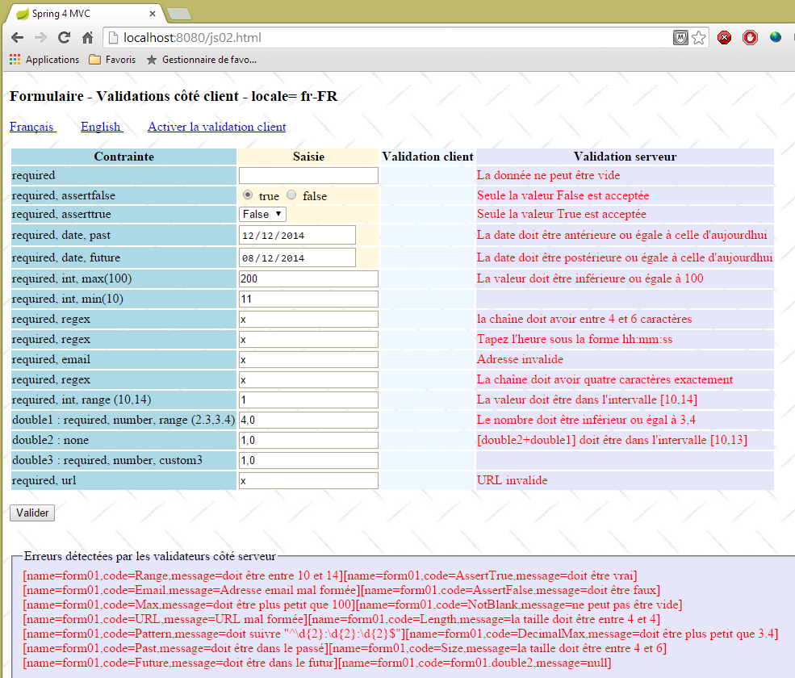
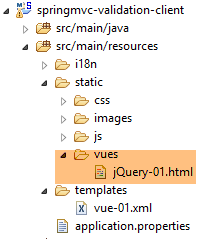
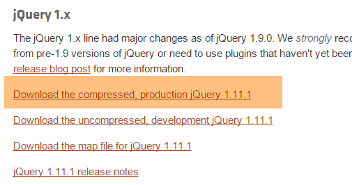
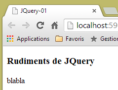
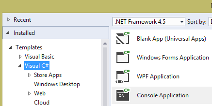
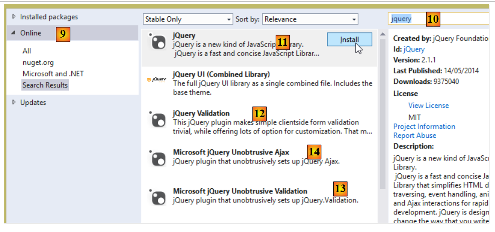
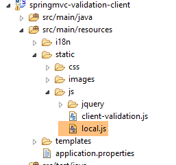
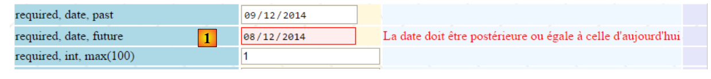
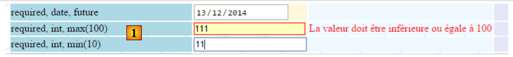
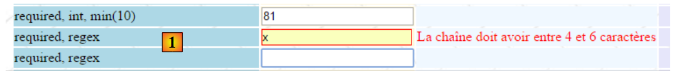

6. Validation Javascript côté client
Dans le chapitre précédent nous nous sommes intéressés à la validation côté serveur. Revenons à l'architecture d'une application Spring MVC :
 |
BD
Pour l'instant, les pages envoyées au client ne contenaient pas de Javascript. Nous abordons maintenant cette technologie qui va nous permettre dans un premier temps de faire des validations côté client. Le principe est le suivant :
- c'est le Javascript qui poste les valeurs au serveur web ;
- et donc avant ce POST, il peut vérifier la validité des données et empêcher le POST si celles-ci sont invalides ;
Nous allons utiliser le formulaire que nous avons validé côté serveur. Nous allons maintenant offrir la possibilité de le valider à la fois côté client et côté serveur.
Note : le sujet est complexe. Le lecteur non intéressé par ce thème peut passer directement au paragraphe 7.
6.1. Les fonctionnalités du projet
Nous présentons quelques vues du projet pour présenter ses fonctionnalités. La page initiale est obtenue avec l'URL [http://localhost:8080/js01.html]
 |
Les validations ont été mises en place des deux côtés : client et serveur. Comme le POST n'a lieu que si les valeurs ont été considérées comme valides côté client, les validations côté serveur réussissent tout le temps. On a donc offert un lien pour désactiver les validations côté client. Lorsqu'on est dans ce mode, on retrouve le mode de fonctionnement que nous avons déjà étudié. Voici un exemple :
123  |
- en [1], les valeurs saisies ;
- en [2], les messages d'erreur liées aux saisies ;
- en [3], un récapitulatif des erreurs avec pour chacune d'elles :
- le nom du champ validé,
- le code d'erreur,
- le message par défaut de ce code d'erreur ;
Maintenant, autorisons la validation côté client :
 |
- en [1], les valeurs saisies. On peut remarquer que les saisies erronées ont un style particulier ;
- en [2], les messages d'erreur associés aux saisies erronées. Ils sont identiques à ceux générés par le serveur ;
- en [3-4], il n'y a plus rien car tant qu'il y a des saisies erronées, le POST vers le serveur n'a pas lieu ;
6.2. Validation côté serveur
6.2.1. Configuration
Nous commençons par créer un nouveau projet Maven [springmvc-validation-client] :
 |
Nous faisons évoluer le projet de la façon suivante :
 |
La classe [Config] configure le projet. Elle est identique à ce qu'elle était dans les projets précédents :
package istia.st.springmvc.config;
import java.util.Locale;
import org.springframework.boot.autoconfigure.EnableAutoConfiguration;
import org.springframework.context.MessageSource;
import org.springframework.context.annotation.Bean;
import org.springframework.context.annotation.ComponentScan;
import org.springframework.context.annotation.Configuration;
import org.springframework.context.support.ResourceBundleMessageSource;
import org.springframework.web.servlet.config.annotation.InterceptorRegistry;
import org.springframework.web.servlet.config.annotation.WebMvcConfigurerAdapter;
import org.springframework.web.servlet.i18n.CookieLocaleResolver;
import org.springframework.web.servlet.i18n.LocaleChangeInterceptor;
import org.thymeleaf.spring4.SpringTemplateEngine;
import org.thymeleaf.spring4.templateresolver.SpringResourceTemplateResolver;
@Configuration
@ComponentScan({ "istia.st.springmvc.controllers", "istia.st.springmvc.models" })
@EnableAutoConfiguration
public class Config extends WebMvcConfigurerAdapter {
@Bean
public MessageSource messageSource() {
ResourceBundleMessageSource messageSource = new ResourceBundleMessageSource();
messageSource.setBasename("i18n/messages");
return messageSource;
}
@Bean
public LocaleChangeInterceptor localeChangeInterceptor() {
LocaleChangeInterceptor localeChangeInterceptor = new LocaleChangeInterceptor();
localeChangeInterceptor.setParamName("lang");
return localeChangeInterceptor;
}
@Override
public void addInterceptors(InterceptorRegistry registry) {
registry.addInterceptor(localeChangeInterceptor());
}
@Bean
public CookieLocaleResolver localeResolver() {
CookieLocaleResolver localeResolver = new CookieLocaleResolver();
localeResolver.setCookieName("lang");
localeResolver.setDefaultLocale(new Locale("fr"));
return localeResolver;
}
@Bean
public SpringResourceTemplateResolver templateResolver() {
SpringResourceTemplateResolver templateResolver = new SpringResourceTemplateResolver();
templateResolver.setPrefix("classpath:/templates/");
templateResolver.setSuffix(".xml");
templateResolver.setTemplateMode("HTML5");
templateResolver.setCacheable(true);
templateResolver.setCharacterEncoding("UTF-8");
return templateResolver;
}
@Bean
SpringTemplateEngine templateEngine(SpringResourceTemplateResolver templateResolver) {
SpringTemplateEngine templateEngine = new SpringTemplateEngine();
templateEngine.setTemplateResolver(templateResolver);
return templateEngine;
}
}
La classe [Main] est la classe exécutable du projet :
package istia.st.springmvc.main;
import istia.st.springmvc.config.Config;
import java.util.Arrays;
import org.springframework.boot.SpringApplication;
import org.springframework.context.ApplicationContext;
public class Main {
public static void main(String[] args) {
// on lance l'application
ApplicationContext context = SpringApplication.run(Config.class, args);
// on affiche la liste des beans trouvés par Spring
System.out.println("Liste des beans Spring");
String[] beanNames = context.getBeanDefinitionNames();
Arrays.sort(beanNames);
for (String beanName : beanNames) {
System.out.println(beanName);
}
}
}
- ligne 13, Spring Boot est lancé avec le fichier de configuration [Config] ;
- lignes 15-20 : pour l'exemple, nous montrons comment afficher la liste des objets gérée par Spring. Cela peut être utile si parfois on a l'impression que Spring ne gère pas l'un de nos composants. C'est un moyen de le vérifier. C'est aussi un moyen de vérifier l'autoconfiguration faite par Spring Boot. Sur la console, on obtient une liste analogue à la suivante :
Nous avons surligné les objets définis dans la classe [Config].
6.2.2. Le modèle du formulaire
Continuons l'exploration du projet :
 |
La classe [Form01] est la classe qui va réceptionner les valeurs postées. Elle est la suivante :
package istia.st.springmvc.models;
import java.util.Date;
import javax.validation.constraints.AssertFalse;
import javax.validation.constraints.AssertTrue;
import javax.validation.constraints.DecimalMax;
import javax.validation.constraints.DecimalMin;
import javax.validation.constraints.Future;
import javax.validation.constraints.Max;
import javax.validation.constraints.Min;
import javax.validation.constraints.NotNull;
import javax.validation.constraints.Past;
import javax.validation.constraints.Pattern;
import javax.validation.constraints.Size;
import org.hibernate.validator.constraints.Email;
import org.hibernate.validator.constraints.Length;
import org.hibernate.validator.constraints.NotBlank;
import org.hibernate.validator.constraints.Range;
import org.hibernate.validator.constraints.URL;
import org.springframework.format.annotation.DateTimeFormat;
public class Form01 {
// valeurs postées
@NotNull
@AssertFalse
private Boolean assertFalse;
@NotNull
@AssertTrue
private Boolean assertTrue;
@NotNull
@Future
@DateTimeFormat(pattern = "yyyy-MM-dd")
private Date dateInFuture;
@NotNull
@Past
@DateTimeFormat(pattern = "yyyy-MM-dd")
private Date dateInPast;
@NotNull
@Max(value = 100)
private Integer intMax100;
@NotNull
@Min(value = 10)
private Integer intMin10;
@NotNull
@NotBlank
private String strNotEmpty;
@NotNull
@Size(min = 4, max = 6)
private String strBetween4and6;
@NotNull
@Pattern(regexp = "^\\d{2}:\\d{2}:\\d{2}$")
private String hhmmss;
@NotNull
@Email
@NotBlank
private String email;
@NotNull
@Length(max = 4, min = 4)
private String str4;
@Range(min = 10, max = 14)
@NotNull
private Integer int1014;
@NotNull
@DecimalMax(value = "3.4")
@DecimalMin(value = "2.3")
private Double double1;
@NotNull
private Double double2;
@NotNull
private Double double3;
@URL
@NotBlank
private String url;
// validation client
private boolean clientValidation = true;
// locale
private String lang;
...
}
Nous retrouvons des validateurs déjà rencontrés. Nous allons de plus introduire la notion de validation spécifique. C'est une validation qui ne peut être formalisée avec un validateur prédéfini. On va ici demander à ce que [double1+double2] soit dans l'intervalle [10,13].
6.2.3. Le contrôleur
Le contrôleur [JsController] est le suivant :
 |
package istia.st.springmvc.controllers;
import istia.st.springmvc.models.Form01;
...
@Controller
public class JsController {
@RequestMapping(value = "/js01", method = RequestMethod.GET, produces = "text/html; charset=UTF-8")
public String js01(Form01 formulaire, Locale locale, Model model) {
setModel(formulaire, model, locale, null);
return "vue-01";
}
...
// préparation du modèle de la vue vue-01
private void setModel(Form01 formulaire, Model model, Locale locale, String message) {
...
}
}
- ligne 9, l'action [/js01] ;
- ligne 10 : un objet de type [Form01] est instancié et mis automatiquement dans le modèle, associé à la clé [form01] ;
- ligne 10 : la locale et le modèle sont injectés dans les paramètres ;
- ligne 11 : avec ces informations, on prépare le modèle ;
- ligne 12 : on affiche la vue [vue-01.xml] ;
La méthode [setModel] est la suivante :
// préparation du modèle de la vue vue-01
private void setModel(Form01 formulaire, Model model, Locale locale, String message) {
// on ne gère que les locales fr-FR, en-US
String language = locale.getLanguage();
String country = null;
if (language.equals("fr")) {
country = "FR";
formulaire.setLang("fr_FR");
}
if (language.equals("en")) {
country = "US";
formulaire.setLang("en_US");
}
model.addAttribute("locale", String.format("%s-%s", language, country));
// le message éventuel
if (message != null) {
model.addAttribute("message", message);
}
}
- le but de la méthode [setModel] est de mettre dans le modèle :
- des informations sur la locale,
- le message passé en dernier paramètre ;
- ligne 14 : on met dans le modèle des informations sur la locale (langue, pays) ;
- lignes 16-18 : on met dans la locale l'éventuel message passé en paramètre ;
- lignes 8, 12 : les informations sur la locale sont également stockées dans le formulaire [Form01]. Le Javascript va utiliser cette information ;
Les valeurs saisies dans le formulaire [vue-01.xml] vont être postées à l'action [/js02] suivante :
@RequestMapping(value = "/js02", method = RequestMethod.POST, produces = "text/html; charset=UTF-8")
public String js02(@Valid Form01 formulaire, BindingResult result, RedirectAttributes redirectAttributes, Locale locale, Model model) {
Form01Validator validator = new Form01Validator(10, 13);
validator.validate(formulaire, result);
...
}
- ligne 2 : l'annotation [@Valid Form01 formulaire] fait que les valeurs postées vont être soumises aux validateurs de la classe [Form01]. Nous savons qu'il existe une validation spécifique [double1+double2] dans l'intervalle [10,13]. Lorsqu'on arrive à la ligne 3, cette validation n'a pas été faite ;
- ligne 3 : on crée l'objet [Form01Validator] suivant :
 |
package istia.st.springmvc.validators;
import istia.st.springmvc.models.Form01;
import org.springframework.validation.Errors;
import org.springframework.validation.Validator;
public class Form01Validator implements Validator {
// l'intervalle de validation
private double min;
private double max;
// constructeur
public Form01Validator(double min, double max) {
this.min = min;
this.max = max;
}
@Override
public boolean supports(Class<?> classe) {
return Form01.class.equals(classe);
}
@Override
public void validate(Object form, Errors errors) {
// objet validé
Form01 form01 = (Form01) form;
// la valeur de [double1]
Double double1 = form01.getDouble1();
if (double1 == null) {
return;
}
// la valeur de [double2]
Double double2 = form01.getDouble2();
if (double2 == null) {
return;
}
// [double1+double2]
double somme = double1 + double2;
// validation
if (somme < min || somme > max) {
errors.rejectValue("double2", "form01.double2", new Double[] { min, max }, null);
}
}
}
- ligne 8 : pour implémenter une validation spécifique, nous créons une classe implémentant l'interface Spring [Validator]. Cette interface a deux méthodes : [supports] ligne 21 et [validate] ligne 26 ;
- lignes 21-23 : la méthode [supports] reçoit un objet de type [Class]. Elle doit rendre true pour dire qu'elle supporte cette classe, false sinon ;
- ligne 22 : nous disons que la classe [Form01Validator] ne valide que des objets de type [Form01] ;
- lignes 15-18 : rappelons que nous voulons implémenter la contrainte [double1+double2] dans l'intervalle [10,13]. plutôt que de s'en tenir à cet intervalle, nous allons vérifier la contrainte [double1+double2] dans l'intervalle [min, max]. C'est pourquoi nous avons un constructeur avec ces deux paramètres ;
- ligne 26 : la méthode [validate] est appelée avec une instance de l'objet validé, donc ici une instance de [Form01] et avec la collection des erreurs actuellement connues [Errors errors]. Si la validation faite par la méthode [validate] échoue, elle doit créer un nouvel élément dans la collection [Errors errors] ;
- ligne 43 : la validation a échoué. On ajoute un élément à la collection [Errors errors] avec la méthode [Errors.rejectValue] dont les paramètres sont les suivants :
- paramètre 1 : habituellement le nom du champ erroné. Ici on a testé les champs [double1, double2]. On peut mettre l'un des deux,
- le message d'erreur associé ou plus exactement sa clé dans les fichiers de messages externalisés :
[messages_fr.properties]
form01.double2=[double2+double1] doit être dans l''intervalle [{0},{1}]
[messages_en.properties]
form01.double2=[double2+double1] must be in [{0},{1}
On a là des messages paramétrés par {0} et {1}. Il faut donc fournir deux valeurs à ce message. C'est ce que fait le troisième paramètre de la méthode [Errors.rejectValue].
- le quatrième paramètre est un message par défaut pour l'erreur ;
Revenons à l'action [/js02] :
@RequestMapping(value = "/js02", method = RequestMethod.POST, produces = "text/html; charset=UTF-8")
public String js02(@Valid Form01 formulaire, BindingResult result, RedirectAttributes redirectAttributes, Locale locale, Model model) {
Form01Validator validator = new Form01Validator(10, 13);
validator.validate(formulaire, result);
if (result.hasErrors()) {
StringBuffer buffer = new StringBuffer();
for (ObjectError error : result.getAllErrors()) {
buffer.append(String.format("[name=%s,code=%s,message=%s]", error.getObjectName(), error.getCode(), error.getDefaultMessage()));
}
setModel(formulaire, model, locale, buffer.toString());
return "vue-01";
} else {
redirectAttributes.addFlashAttribute("form01", formulaire);
return "redirect:/js01.html";
}
}
- ligne 4 : le validateur [Form01Validator] est exécuté avec les paramètres :
- paramètre 1 : l'objet en cours de validation,
- paramètre 2 : la liste des erreurs de cet objet. Celle-ci est l'objet [BindingResult result] passé en paramètres de l'action. Si la validation échoue, cet objet aura une erreur de plus ;
- ligne 5 : on teste s'il y a des erreurs de validation ;
- lignes 7-10 : on parcourt la liste des erreurs pour mémoriser pour chacune d'elles :
- le nom de l'objet validé,
- son code d'erreur,
- son message d'erreur par défaut ;
- ligne 10 : avec ces informations, on construit le modèle de la vue [vue-01.xml]. Cette fois-ci, il y a un message, la version concaténée et abrégée des différents messages d'erreur ;
- lignes 12-15 : si toutes les valeurs postées sont valides, on redirige le client vers l'action [/js01] en mettant les valeurs postées en attribut Flash ;
6.2.4. La vue
La vue [vue-01.xml] est complexe. Nous n'allons en présenter qu'une petite partie :
<!DOCTYPE HTML>
<html xmlns:th="http://www.thymeleaf.org">
<head>
<title>Spring 4 MVC</title>
<meta http-equiv="Content-Type" content="text/html; charset=UTF-8" />
<link rel="stylesheet" href="/css/form01.css" />
<script type="text/javascript" src="/js/jquery/jquery-1.10.2.min.js"></script>
...
</head>
<body>
<!-- titre -->
<h3>
<span th:text="#{form01.title}"></span>
<span th:text="${locale}"></span>
</h3>
<!-- menu -->
<p>
...
</p>
<!-- formulaire -->
<form action="/someURL" th:action="@{/js02.html}" method="post" th:object="${form01}" name="form" id="form">
<table>
<thead>
<tr>
<th class="col1" th:text="#{form01.col1}">Contrainte</th>
<th class="col2" th:text="#{form01.col2}">Saisie</th>
<th class="col3" th:text="#{form01.col3}">Validation client</th>
<th class="col4" th:text="#{form01.col4}">Validation serveur</th>
</tr>
</thead>
<tbody>
<!-- required -->
<tr>
<td class="col1">required</td>
<td class="col2">
<input type="text" th:field="*{strNotEmpty}" data-val="true" th:attr="data-val-required=#{NotNull}" />
</td>
<td class="col3">
<span class="field-validation-valid" data-valmsg-for="strNotEmpty" data-valmsg-replace="true"></span>
</td>
<td class="col4">
<span th:if="${#fields.hasErrors('strNotEmpty')}" th:errors="*{strNotEmpty}" class="error">Donnée erronée</span>
</td>
</tr>
...
</tbody>
</table>
<p>
<!-- bouton de validation -->
<input type="submit" th:value="#{form01.valider}" value="Valider" onclick="javascript:postForm01()" />
</p>
</form>
<!-- message des validateurs côté serveur -->
<br/>
<fieldset class="fieldset">
<legend>
<span th:text="#{server.error.message}"></span>
</legend>
<span th:text="${message}" class="error"></span>
</fieldset>
</body>
</html>
Cette page utilise un certain nombre de messages trouvés dans les fichiers de messages externalisés :
[messages_fr.properties]
form01.title=Formulaire - Validations côté client - locale=
form01.col1=Contrainte
form01.col2=Saisie
form01.col3=Validation client
form01.col4=Validation serveur
form01.valider=Valider
server.error.message=Erreurs détectées par les validateurs côté serveur
[messages_en.properties]
form01.title=Form - Client side validation - locale=
form01.col1=Constraint
form01.col2=Input
form01.col3=Client validation
form01.col4=Server validation
form01.valider=Validate
server.error.message=Errors detected by the validators on the server side
Revenons au code de la page :
- ligne 8 : un grand nombre d'imports de bibliothèques Javascript que nous pouvons ignorer ici ;
- ligne 14 : affiche la locale mise dans le modèle par le serveur ;
- ligne 59 : affiche le message mis dans le modèle par le serveur ;
Le code des lignes 33-44 est nouveau. Etudions-le :
<!-- required -->
<tr>
<td class="col1">required</td>
<td class="col2">
<input type="text" th:field="*{strNotEmpty}" data-val="true" th:attr="data-val-required=#{NotNull}" />
</td>
<td class="col3">
<span class="field-validation-valid" data-valmsg-for="strNotEmpty" data-valmsg-replace="true"></span>
</td>
<td class="col4">
<span th:if="${#fields.hasErrors('strNotEmpty')}" th:errors="*{strNotEmpty}" class="error">Donnée erronée</span>
</td>
</tr>
Le plus simple est peut-être de regarder le code HTML généré par ce segment Thymeleaf :
<!-- required -->
<tr>
<td class="col1">required</td>
<td class="col2">
<input type="text" data-val="true" data-val-required="Le champ est obligatoire" id="strNotEmpty" name="strNotEmpty" value="" />
</td>
<td class="col3">
<span class="field-validation-valid" data-valmsg-for="strNotEmpty" data-valmsg-replace="true"></span>
</td>
<td class="col4">
</td>
</tr>
Nous allons utiliser, côté client une bibliothèque de validation appelée [jquery.validate]. Tous les attributs [data-x] sont pour elle. Lorsque la validation côté client sera inhibée, ces attributs ne seront pas exploités. Donc pour l'instant, il est inutile de les comprendre. On peut simplement s'attarder sur la ligne Thymeleaf suivante :
<input type="text" th:field="*{strNotEmpty}" data-val="true" th:attr="data-val-required=#{NotNull}" />
qui génère la ligne HTML suivante :
<input type="text" data-val="true" data-val-required="Le champ est obligatoire" id="strNotEmpty" name="strNotEmpty" value="" />
Ci-dessus, il y a une difficulté pour générer l'attribut [data-val-required="Le champ est obligatoire"]. En effet, la valeur associée à l'attribut provient des fichiers de messages externalisés. On est alors obligé de passer par une expression Thymeleaf pour l'obtenir. C'est l'expression suivante : [th:attr="data-val-required=#{NotNull}"]. Cette expression est évaluée et sa valeur mise telle quelle dans la balise HTML générée. Elle s'appelle [th:attr] car on l'utilise pour générer des attributs nons prédéfinis dans Thymeleaf Nous avons rencontré des attributs prédéfinis [th:text, th:value, th:class, ...] mais il n'existe pas d'attribut [th:data-val-required].
6.2.5. La feuille de style
Ci-dessus, on rencontre des classes CSS telles que [class="field-validation-valid"]. Certaine de ces classes sont utilisées par la bibliothèque Javascript de validation. Elles sont définies dans le fichier [form01.css] suivant :
 |
@CHARSET "UTF-8";
/*styles perso*/
body {
background-image: url("/images/standard.jpg");
}
.col1 {
background: lightblue;
}
.col2 {
background: Cornsilk;
}
.col3 {
background: AliceBlue;
}
.col4 {
background: Lavender;
}
.error {
color: red;
}
.fieldset{
background: Lavender;
}
/* Styles for validation helpers
-----------------------------------------------------------*/
.field-validation-error {
color: #f00;
}
.field-validation-valid {
display: none;
}
.input-validation-error {
border: 1px solid #f00;
background-color: #fee;
}
.validation-summary-errors {
font-weight: bold;
color: #f00;
}
.validation-summary-valid {
display: none;
}
6.3. Validation côté client
6.3.1. Rudiments de jQuery et de Javascript
La validation côté client se fait avec du Javascript. Nous allons nous aider du framework jQuery qui apporte de nombreuses fonctions facilitant le développement Javascript. Nous présentons les rudiments de jQuery à connaître pour comprendre les scripts de ce chapitre et des suivants.
Nous créons un fichier statique HTML [JQuery-01.html] que l'on place dans un dossier [static / vues] :
 |
Ce fichier aura le contenu suivant :
<!DOCTYPE html>
<html xmlns="http://www.w3.org/1999/xhtml">
<head>
<meta http-equiv="Content-Type" content="text/html; charset=utf-8" />
<title>JQuery-01</title>
<script type="text/javascript" src="/js/jquery-1.11.1.min.js"></script>
</head>
<body>
<h3>Rudiments de JQuery</h3>
<div id="element1">
Elément 1
</div>
</body>
</html>
- ligne 6 : importation de jQuery ;
- lignes 10-12 : un élément de la page d'id [element1]. Nous allons jouer avec cet élément.
Il nous faut télécharger le fichier [jquery-1.11.1.min.js]. On le trouvera la dernière version de jQuery à l'URL [http://jquery.com/download/] :

On placera le fichier téléchargé dans le dossier [static / js] :
 |
Ceci fait, on demande la vue statique [jQuery-01.html] avec Chrome [1-2] :
 |
Avec Google Chrome, faire [Ctrl-Maj-I] pour faire apparaître les outils de développement [3]. L'onglet [Console] [4] permet d'exécuter du code Javascript. Nous donnons dans ce qui suit des commandes Javascript à taper et nous en donnons une explication.
JS | résultat |
|
: rend la collection de tous les éléments d'id [element1], donc normalement une collection de 0 ou 1 élément parce qu'on ne peut avoir deux id identiques dans une page HTML. |  |
|
: affecte le texte [blabla] à tous les éléments de la collection. Ceci a pour effet de changer le contenu affiché par la page |   |
|
cache les éléments de la collection. Le texte [blabla] n'est plus affiché. |   |
|
: affiche de nouveau la collection. Cela nous permet de voir que l'élément d'id [element1] a l'attribut CSS style='display : none;' qui fait que l'élément est caché. |  |
|
: affiche les éléments de la collection. Le texte [blabla] apparaît de nouveau. C'est l'attribut CSS style='display : block;' qui assure cet affichage. |   |
|
: fixe un attribut à tous les éléments de la collection. L'attribut est ici [style] et sa valeur [color: red]. Le texte [blabla] passe en rouge. |   |
 | |
 |
On notera que l'URL du navigateur n'a pas changé pendant toutes ces manipulations. Il n'y a pas eu d'échanges avec le serveur web. Tout se passe à l'intérieur du navigateur. Maintenant, visualisons le code source de la page :
<!DOCTYPE html>
<html xmlns="http://www.w3.org/1999/xhtml">
<head>
<meta http-equiv="Content-Type" content="text/html; charset=utf-8" />
<title>JQuery-01</title>
<script type="text/javascript" src="/js/jquery-1.11.1.min.js"></script>
</head>
<body>
<h3>Rudiments de JQuery</h3>
<div id="element1">
Elément 1
</div>
</body>
</html>
C'est le texte initial. Il ne reflète en rien les manipulations que l'on a faites sur l'élément des lignes 10-12. Il est important de s'en souvenir lorsqu'on fait du débogage Javascript. Il est alors souvent inutile de visualiser le code source de la page affichée.
Nous en savons assez pour comprendre les scripts jS qui vont suivre.
6.3.2. Les bibliothèques jS de validation
Nous allons utiliser des bibliothèques de l'écosystème jQuery. Gravite autour de jQuery, un certain nombre de projets qui donnent naissance à leur tour à des bibliothèques. Nous allons utiliser la bibliothèque de validation [jquery.validate.unobstrusive] créée par Microsoft et donnée à la fondation jQuery. Nous la désignerons par la suite par bibliothèque MS de validation ou plus simplement bibliothèque MS. Pour l'obtenir, il faut un environnement Microsoft Visual Studio. Je n'ai pas vu comment l'obtenir autrement. On peut utiliser une version gratuite de type [Visual Studio Community] [http://www.visualstudio.com/en-us/news/vs2013-community-vs.aspx] (déc 2014). Le lecteur pas intéressé à suivre la démarche qui suit peut récupérer cette bibliothèque et celles sur lesquelles elle s'appuie dans les exemples présents sur le site de ce document.
On crée un projet console avec Visual Studio [1-4] :
  |
 |
- en [5], le projet console ;
- en [6-7] : on va ajouter des packages [NuGet] au projet. [NuGet] est une fonction de Visual Studio permettant de télécharger des bibliothèques sous formes de DLL mais également des bibliothèques jS.
 |
- en [9-10], faites une recherche avec le mot clé [jQuery] ;
- en [11-13], téléchargez dans l'ordre indiqué les bibliothèques jS nécessaires à la validation côté client ;
- en [14], téléchargez également la bibliothèque [Microsoft jQuery Unobtrusive Ajax] que nous allons utiliser prochainement ;
 |
- en [15-16], faites une recherche de packages avec le mot clé [globalize] ;
- en [17], téléchargez la bibliothèque [jQuery.Validation.Globalize] ;
 |
Ces divers téléchargements ont installé un certain nombre de bibliothèques jS dans le dossier [Scripts] du projet [18]. Ils ne sont pas tous utiles. Chaque fichier vient en deux exemplaires :
- [js] : la version lisible de la bibliothèque ;
- [min.js] : la version illisible dite minifiée 'minified' de la bibliothèque. Elle n'est pas vraiment illisible. C'est du texte. Mais elle n'est pas compréhensible. C'est la version à utiliser en production car ce fichier est plus petit que la version correspondante [js] et donc améliore la rapidité des échanges client / serveur ;
Les version [min.map] ne sont pas indispensables. Dans le dossier [cultures], on peut ne conserver que les cultures gérées par l'application.
Avec l'explorateur Windows, on copie ces fichiers dans le dossier [static / js / jquery] du projet [springmvc-validation-client] et on ne garde que les fichiers utiles [20] :
 |
En [21], on ne garde que deux cultures :
- [fr-FR] : le français de France ;
- [en-US] : l'anglais des USA ;
6.3.3. Import des bibliothèques jS de validation
Pour être exploitées, ces bibliothèques doivent être importées par la vue [vue-01.xml] :
<head>
<title>Spring 4 MVC</title>
<meta http-equiv="Content-Type" content="text/html; charset=UTF-8" />
<link rel="stylesheet" href="/css/form01.css" />
<script type="text/javascript" src="/js/jquery/jquery-2.1.1.min.js"></script>
<script type="text/javascript" src="/js/jquery/jquery.validate.min.js"></script>
<script type="text/javascript" src="/js/jquery/jquery.validate.unobtrusive.min.js"></script>
<script type="text/javascript" src="/js/jquery/globalize/globalize.js"></script>
<script type="text/javascript" src="/js/jquery/globalize/cultures/globalize.culture.fr-FR.js"></script>
<script type="text/javascript" src="/js/jquery/globalize/cultures/globalize.culture.en-US.js"></script>
<script type="text/javascript" src="/js/client-validation.js"></script>
<script type="text/javascript" src="/js/local.js"></script>
<script th:inline="javascript">
/*<![CDATA[*/
var culture = [[${locale}]];
Globalize.culture(culture);
/*]]>*/
</script>
</head>
- ligne 11 : l'import d'un fichier jS dont nous n'avons pas encore parlé ;
- lignes 13-18 : un script jS interprété par Thymelaf. Il gère la locale côté client ;
6.3.4. Gestion de la locale côté client
La localisation côté client est faite par le script jS suivant :
<script th:inline="javascript">
/*<![CDATA[*/
var culture = [[${locale}]];
Globalize.culture(culture);
/*]]>*/
</script>
- lignes 3-4 : du code jS dans lequel on trouve l'expression Thymeleaf [[${locale}]]. Notez la syntaxe particulière de cette expression. Ceci parce qu'elle est dans du javascript. L'expression [[${locale}]] va être remplacée par la valeur de la clé [locale] du modèle de la vue ;
Le résultat dans le flux HTML généré de ces lignes est le suivant :
<script>
/*<![CDATA[*/
var culture = 'en-US';
Globalize.culture(culture);
/*]]>*/
</script>
Les lignes 3-4 fixent la culture côté client. On n'en gère que deux, [fr-FR] et [en-US]. C'est la raison pour laquelle nous n'avons importé que deux fichiers de culture :
<script type="text/javascript" src="/js/jquery/globalize/cultures/globalize.culture.fr-FR.js"></script>
<script type="text/javascript" src="/js/jquery/globalize/cultures/globalize.culture.en-US.js"></script>
La culture à utiliser côté client est fixée côté serveur. Revenons sur le code côté serveur :
@RequestMapping(value = "/js01", method = RequestMethod.GET, produces = "text/html; charset=UTF-8")
public String js01(Form01 formulaire, Locale locale, Model model) {
setModel(formulaire, model, locale, null);
return "vue-01";
}
// préparation du modèle de la vue vue-01
private void setModel(Form01 formulaire, Model model, Locale locale, String message) {
// on ne gère que les locales fr-FR, en-US
String language = locale.getLanguage();
String country = null;
if (language.equals("fr")) {
country = "FR";
formulaire.setLang("fr_FR");
}
if (language.equals("en")) {
country = "US";
formulaire.setLang("en_US");
}
model.addAttribute("locale", String.format("%s-%s", language, country));
...
}
- ligne 20 : la locale [fr-FR] ou [en-US] est mise dans le modèle de la vue [vue-01.xml] (ligne 4). On notera une source de complications. Alors qu'une locale française est notée [fr-FR] côté client, elle est notée [fr_FR] côté serveur. C'est la raison pour laquelle, lignes 14 et 18, elle est stockée sous cette forme dans l'objet [Form01 formulaire] qui réceptionne les valeurs postées ;
On notera le point important suivant. Le script
<script>
/*<![CDATA[*/
var culture = 'en-US';
Globalize.culture(culture);
/*]]>*/
</script>
change la culture du client à partir de la locale transmise par le serveur. Cela n'internationalise pas les messages affichés par la page. Cela change seulement la façon d'interpréter certaines informations qui dépendent de la culture d'un pays. Avec la culture [fr_FR], le nombre réel [12,78] est valide alors qu'il est invalide avec le culture [en-US]. Il faut alors écrire [12.78]. De même la date [12/01/2014] est une date valide dans la culture [fr-FR] alors que dans la culture [en-US] il faut écrire [01/12/2014]. Les fichiers du dossier [jquery / globalize] gèrent ce genre de problèmes :
 |
L'internationalisation des messages d'erreur est gérée uniquement côté serveur. Nous allons voir que la page HTML / jS transporte avec elle des messages d'erreur correspondant à la locale gérée par le serveur : en français pour la locale [fr_FR] et en anglais pour la locale [en_US].
6.3.5. Les fichiers de messages
La vue [vue-01.xml] utilise les messages internationalisés suivants :
 |
[messages_fr.properties]
NotNull=Le champ est obligatoire
NotEmpty=La donnée ne peut être vide
NotBlank=La donnée ne peut être vide
typeMismatch=Format invalide
Future.form01.dateInFuture=La date doit être postérieure ou égale à celle d''aujourd'hui
Past.form01.dateInPast=La date doit être antérieure ou égale à celle d''aujourd'hui
Min.form01.intMin10=La valeur doit être supérieure ou égale à 10
Max.form01.intMax100=La valeur doit être inférieure ou égale à 100
Size.form01.strBetween4and6=La chaîne doit avoir entre 4 et 6 caractères
Length.form01.str4=La chaîne doit avoir quatre caractères exactement
Email.form01.email=Adresse mail invalide
URL.form01.url=URL invalide
Range.form01.int1014=La valeur doit être dans l''intervalle [10,14]
AssertTrue=Seule la valeur True est acceptée
AssertFalse=Seule la valeur False est acceptée
Pattern.form01.hhmmss=Tapez l''heure sous la forme hh:mm:ss
form01.hhmmss.pattern=^\\d{2}:\\d{2}:\\d{2}$
DateInvalide.form01=Date invalide
form01.str4.pattern=^.{4,4}$
form01.int1014.max=14
form01.int1014.min=10
form01.strBetween4and6.pattern=^.{4,6}$
form01.intMax100.value=100
form01.intMin10.value=10
form01.double1.min=2.3
form01.double1.max=3.4
Range.form01.double1=La valeur doit être dans l'intervalle [2,3-3,4]
form01.title=Formulaire - Validations côté client - locale=
form01.col1=Contrainte
form01.col2=Saisie
form01.col3=Validation client
form01.col4=Validation serveur
form01.valider=Valider
form01.double2=[double2+double1] doit être dans l''intervalle [{0},{1}]
form01.double3=[double3+double1] doit être dans l''intervalle [{0},{1}]
locale.fr=Français
locale.en=English
client.validation.true=Activer la validation client
client.validation.false=Inhiber la validation client
DecimalMin.form01.double1=Le nombre doit être supérieur ou égal à 2,3
DecimalMax.form01.double1=Le nombre doit être inférieur ou égal à 3,4
server.error.message=Erreurs détectées par les validateurs côté serveur
[messages_en.properties]
NotNull=Field is required
NotEmpty=Field can''t be empty
NotBlank=Field can''t be empty
typeMismatch=Invalid format
Future.form01.dateInFuture=Date must be greater or equal to today''s date
Past.form01.dateInPast=Date must be lower or equal today''s date
Min.form01.intMin10=Value must be higher or equal to 10
Max.form01.intMax100=Value must be lower or equal to 100
Size.form01.strBetween4and6=String must have between 4 and 6 characters
Length.form01.str4=String must be exactly 4 characters long
Email.form01.email=Invalid mail address
URL.form01.url=Invalid URL
Range.form01.int1014=Value must be in [10,14]
AssertTrue=Only value True is allowed
AssertFalse=Only value False is allowed
Pattern.form01.hhmmss=Time must follow the format hh:mm:ss
form01.hhmmss.pattern=^\\d{2}:\\d{2}:\\d{2}$
DateInvalide.form01=Invalid Date
form01.str4.pattern=^.{4,4}$
form01.int1014.max=14
form01.int1014.min=10
form01.strBetween4and6.pattern=^.{4,6}$
form01.intMax100.value=100
form01.intMin10.value=10
form01.double1.min=2.3
form01.double1.max=3.4
Range.form01.double1=Value must be in [2.3,3.4]
form01.title=Form - Client side validation - locale=
form01.col1=Constraint
form01.col2=Input
form01.col3=Client validation
form01.col4=Server validation
form01.valider=Validate
form01.double2=[double2+double1] must be in [{0},{1}]
form01.double3=[double3+double1] must be in [{0},{1}]
locale.fr=Français
locale.en=English
client.validation.true=Activate client validation
client.validation.false=Inhibate client validation
DecimalMin.form01.double1=Value must be greater or equal to 2.3
DecimalMax.form01.double1=Value must be lower or equal to 3.4
server.error.message=Errors detected by the validators on the server side
Le fichier [messages.properties] est une copie du fichier des messages anglais. Au final, toute locale différente de [fr] utilisera des messages anglais. On rappelle que le fichier [messages_fr.properties] est utilisé pour toute locale [fr_XX] telle que [fr_CA] ou [fr_FR].
La vue [vue-01.xml] utilise les clés de ces messages. S'il souhaite connaître la valeur associée à ces clés, le lecteur est invité à revenir à ce paragraphe pour la découvrir.
6.3.6. Changement de locale
La vue [vue-01.xml] présente quatre liens :
<body>
<!-- titre -->
<h3>
<span th:text="#{form01.title}"></span>
<span th:text="${locale}"></span>
</h3>
<!-- menu -->
<p>
<a id="locale_fr" href="javascript:setLocale('fr_FR')">
<span th:text="#{locale.fr}"></span>
</a>
<a id="locale_en" href="javascript:setLocale('en_US')">
<span style="margin-left:30px" th:text="#{locale.en}"></span>
</a>
<a id="clientValidationTrue" href="javascript:setClientValidation(true)">
<span style="margin-left:30px" th:text="#{client.validation.true}"></span>
</a>
<a id="clientValidationFalse" href="javascript:setClientValidation(false)">
<span style="margin-left:30px" th:text="#{client.validation.false}"></span>
</a>
</p>
<!-- formulaire -->
<form action="/someURL" th:action="@{/js02.html}" method="post" th:object="${form01}" name="form" id="form">
...
dont certains sont représentés ci-dessous [1] :
 |
Examinons les deux liens qui permettent de changer la locale en français ou en anglais :
<a id="locale_fr" href="javascript:setLocale('fr_FR')">
<span th:text="#{locale.fr}"></span>
</a>
<a id="locale_en" href="javascript:setLocale('en_US')">
<span style="margin-left:30px" th:text="#{locale.en}"></span>
</a>
Un clic sur ces liens provoque l'exécution d'un script jS présent dans le fichier [local.js] [2]. Dans les deux cas, c'est une fonction jS [setLocale] qui est appelée :
// locale
function setLocale(locale) {
// on met à jour la locale
lang.val(locale);
// on soumet le formulaire - cela ne déclenche pas les validateurs du client - c'est pourquoi on n'a pas inhibé la validation côté client
document.form.submit();
}
La compréhension de la ligne 4 nécessite un préambule. La vue [vue-01.xml] embarque un champ caché nommé [lang] :
<input type="hidden" th:field="*{lang}" th:value="*{lang}" value="true" />
qui correspond à un champ [lang] dans [Form01] :
// locale
private String lang;
Les champs cachés sont pratiques lorsqu'on veut enrichir les valeurs postées. Le javascript permet de leur donner une valeur et cette valeur est postée comme une saisie normale faite par l'utilisateur. Le code HTML généré par Thymeleaf est le suivant :
<input type="hidden" value="en_US" id="lang" name="lang" />
La valeur du paramètre [value] est celle du champ [Form01.lang] au moment de la génération du HTML. Ce qu'il est important de noter c'est l'identifiant jS du noeud [id="lang"]. Cet identifiant est exploité par la fonction [] suivante :
// variables globales
var lang;
// document ready
$(document).ready(function() {
// références globales
lang = $("#lang");
});
// locale
function setLocale(locale) {
// on met à jour la locale
lang.val(locale);
// on soumet le formulaire - pour une raison ignorée cela ne déclenche pas les validateurs du client
// c'est pourquoi on n'a pas inhibé la validation
document.form.submit();
}
- lignes 5-8 : la fonction jS [$(document).ready(f)] est une fonction qui est exécutée lorsque le navigateur a chargé la totalité du document envoyé par le serveur. Son paramètre est une fonction. On utilise la fonction jS [$(document).ready(f)] pour initialiser l'environnement jS du document chargé ;
- ligne 7 : l'expression [$("#lang")] est une expression jQuery. Sa valeur est une référence sur le noeud du DOM d'attribut [id='lang'] ;
- ligne 2 : les variables déclarées en-dehors d'une fonction sont globales aux fonctions. Ici, cela signifie que la variable [lang] initialisée dans [$(document).ready()] est également connue dans la fonction [setLocale] de la ligne 11 ;
- ligne 13 : modifie l'attribut [value] du noeud identifié par [lang]. Si lang vaut [xx_XX] alors la balise HTML du noeud devient :
<input type="hidden" value="xx_XX" id="lang" name="lang" />
Le javascript permet de modifier la valeur des éléments du DOM (Document Object Model).
- ligne 16 : [document] désigne le DOM. [document.form] désigne le 1er formulaire trouvé dans ce document. Un Document HTML peut avoir plusieurs balises <form> et donc plusieurs formulaires. Ici nous n'en avons qu'un. [document.form.submit] poste ce formulaire comme si l'utilisateur avait cliqué sur un bouton ayant l'attribut [type='submit']. A quelle action les valeurs du formulaire sont-elles postées ? Pour le savoir, il faut regarder la balise [form] du formulaire dans [vue-01.xml] :
<!-- formulaire -->
<form action="/someURL" th:action="@{/js02.html}" method="post" th:object="${form01}" name="form" id="form">
L'action qui va recevoir les valeurs postées est celle désignée par l'attribut [th:action]. Ce sera donc l'action [/js02.html]. On rappelle que dans ce nom, le suffixe [.html] va être enlevé et c'est au final l'action [/js02] qui va être exécutée. Ce qu'il est important de comprendre c'est que la nouvelle valeur [xx_XX] du noeud [lang] va être postée sous la forme [lang=xx_XX]. Or on a configuré notre application pour intercepter le paramètre [lang] et l'interpréter comme un changement de locale. Donc côté serveur, la locale va devenir [xx_XX]. Regardons l'action [/js02] qui va être exécutée :
@RequestMapping(value = "/js02", method = RequestMethod.POST, produces = "text/html; charset=UTF-8")
public String js02(@Valid Form01 formulaire, BindingResult result, RedirectAttributes redirectAttributes, Locale locale, Model model) {
Form01Validator validator = new Form01Validator(10, 13);
validator.validate(formulaire, result);
if (result.hasErrors()) {
StringBuffer buffer = new StringBuffer();
for (ObjectError error : result.getAllErrors()) {
buffer.append(String.format("[name=%s,code=%s,message=%s]", error.getObjectName(), error.getCode(),
error.getDefaultMessage()));
}
setModel(formulaire, model, locale, buffer.toString());
return "vue-01";
} else {
redirectAttributes.addFlashAttribute("form01", formulaire);
return "redirect:/js01.html";
}
}
// préparation du modèle de la vue vue-01
private void setModel(Form01 formulaire, Model model, Locale locale, String message) {
// on ne gère que les locales fr-FR, en-US
String language = locale.getLanguage();
String country = null;
if (language.equals("fr")) {
country = "FR";
formulaire.setLang("fr_FR");
}
if (language.equals("en")) {
country = "US";
formulaire.setLang("en_US");
}
model.addAttribute("locale", String.format("%s-%s", language, country));
...
}
- ligne 2 : l'action [/js02] va recevoir la nouvelle locale [xx_XX] encapsulée dans le paramètre [Locale locale] :
- lignes 5-12 : si certaines des valeurs postées sont invalides, la vue [vue-01.xml] va être affichée avec des messages d'erreur utilisant la nouvelle locale [xx_XX]. Par ailleurs, la ligne 11 fait que la variable [locale=xx-XX] est mise dans le modèle. Côté client, cette valeur va être utilisée pour mettre à jour la locale côté client. Nous en avons décrit le processus ;
- lignes 14-15 : si les valeurs postées sont toutes valides, alors il y a une redirection vers l'action [/js01] suivante :
@RequestMapping(value = "/js01", method = RequestMethod.GET, produces = "text/html; charset=UTF-8")
public String js01(Form01 formulaire, Locale locale, Model model) {
setModel(formulaire, model, locale, null);
return "vue-01";
}
- ligne 2, la nouvelle locale [xx_XX] est injectée ;
- ligne 3 : la méthode [setModel] va alors mettre la culture du client à [xx-XX] ;
Maintenant regardons l'influence de la locale dans la vue [vue-01.xml]. Pour l'instant nous n'avons pas présenté celle-ci dans sa totalité car elle compte plus de 300 lignes. Néanmoins l'essentiel des lignes consiste en la répétition d'une séquence analogue à la suivante :
<!-- required -->
<tr>
<td class="col1">required</td>
<td class="col2">
<input type="text" th:field="*{strNotEmpty}" data-val="true" th:attr="data-val-required=#{NotNull}" />
</td>
<td class="col3">
<span class="field-validation-valid" data-valmsg-for="strNotEmpty" data-valmsg-replace="true"></span>
</td>
<td class="col4">
<span th:if="${#fields.hasErrors('strNotEmpty')}" th:errors="*{strNotEmpty}" class="error">Donnée erronée</span>
</td>
</tr>
Ce code affiche le fragment [1] suivant :
 |
Le message d'erreur [2] provient de l'attribut [th:attr="data-val-required=#{NotNull}"] de la ligne 5. [#{NotNull}] est un message localisé. Selon la locale côté serveur, la ligne 5 génère la balise :
<input type="text" data-val="true" data-val-required="Field is required" id="strNotEmpty" name="strNotEmpty" />
ou bien la balise :
<input type="text" data-val="true" data-val-required="Le champ est obligatoire" id="strNotEmpty" name="strNotEmpty" />
Les attributs [data-x] sont exploités par la bibliothèque jS de validation.
Au final, on retiendra que les deux liens de changement de locale :
- provoquent un POST des valeurs saisies ;
- changent la locale à la fois côté serveur et côté client ;
- génèrent une page HTML qui emportent avec elle les messages d'erreur destinés à la bibliothèque jS de validation et que ces messages sont dans la langue de la locale choisie ;
6.3.7. Le POST des valeurs saisies
Etudions le bouton [Valider] qui poste les valeurs saisies de la vue [vue-01.xml]. Son code HTML est le suivant :
<!-- bouton de validation -->
<input type="submit" value="Valider" onclick="javascript:postForm01()" />
Si le Javascript est actif sur le navigateur, le clic sur le bouton va déclencher l'exécution de la méthode [postForm01]. Si cette fonction rend le booléen [False] alors le submit n'aura pas lieu. Si elle rend autre chose, alors il aura lieu. Cette fonction se trouve dans le fichier [local.js] :
 |
Il est importé par la vue [vue-01.xml] par la ligne 6 ci-dessous :
<head>
<title>Spring 4 MVC</title>
<meta http-equiv="Content-Type" content="text/html; charset=UTF-8" />
<link rel="stylesheet" href="/css/form01.css" />
...
<script type="text/javascript" src="/js/local.js"></script>
</head>
Dans ce fichier, on trouve le code suivant :
// variables globales
var formulaire;
var clientValidation;
var double1;
var double2;
var double3;
...
$(document).ready(function() {
// références globales
formulaire = $("#form");
clientValidation = $("#clientValidation");
double1 = $("#double1");
double2 = $("#double2");
double3 = $("#double3");
...
});
....
// post formulaire
function postForm01() {
...
}
- lignes 8-16 : la fonction jS [$(document).ready(f)] est une fonction qui est exécutée lorsque le navigateur a chargé la totalité du document envoyé par le serveur. Son paramètre est une fonction. On utilise la fonction jS [$(document).ready(f)] pour initialiser l'environnement jS du document chargé ;
- ligne 10-14 : pour comprendre ces lignes, il faut à la fois regarder le code Thymeleaf et le code HTML généré ;
Le code Thymeleaf concerné est le suivant :
<form action="/someURL" th:action="@{/js02.html}" method="post" th:object="${form01}" name="form" id="form">
...
<input type="text" th:field="*{double1}" th:value="*{double1}" ... />
...
<input type="text" th:field="*{double2}" th:value="*{double2}" />
...
<input type="text" th:field="*{double3}" th:value="*{double3}" ... />
...
<input type="hidden" th:field="*{clientValidation}" th:value="*{clientValidation}" value="true" />
qui génère le code HTML suivant :
<form action="/js02.html" method="post" name="form" id="form">
...
<input type="text" id="double1" name="double1" .../>
....
<input type="text" value="" id="double2" name="double2" />
...
<input value="" id="double3" name="double3" .../>
...
<input type="hidden" value="false" id="clientValidation" name="clientValidation" />
Chaque attribut [th:field='x'] génère deux attributs HTML [name='x'] et [id='x']. L'attribut [name] est le nom des valeurs postées. Ainsi la présence des attributs [name='x'] et [value='y'] pour une balise HTML <input type='text'> va mettre la chaîne x=y dans les valeurs postées name1=val1&name2=val2&... L'attribut [id='x'] est lui utilisé par le Javascript. Il sert à identifier un élément du DOM (Document Object Model). Le document HTML chargé est en effet transformé en arbre Javascript appelé DOM où chaque noeud est repéré par son attribut [id].
Revenons au code de la fonction [$(document).ready()] :
// variables globales
var formulaire;
var clientValidation;
var double1;
var double2;
var double3;
...
$(document).ready(function() {
// références globales
formulaire = $("#form");
clientValidation = $("#clientValidation");
double1 = $("#double1");
double2 = $("#double2");
double3 = $("#double3");
...
});
....
// post formulaire
function postForm01() {
...
}
- ligne 10 : l'expression [$("#form")] est une expression jQuery. Sa valeur est une référence sur le noeud du DOM d'attribut [id='form '] ;
- lignes 10-14 : on récupère les références sur cinq noeuds du DOM ;
- lignes 2-6 : les variables déclarées en-dehors d'une fonction sont globales aux fonctions. Ici, cela signifie que les variables [formulaire, clientValidation , double1, double2, double3] initialisées dans [$(document).ready()] seront connues également dans la fonction [postForm01] de la ligne 19 ;
Maintenant, étudions la fonction [postForm01] :
// post formulaire
function postForm01() {
// mode de validation côté client
var validationActive = clientValidation.val() === "true";
if (validationActive) {
// on efface les erreurs du serveur
clearServerErrors();
// validation du formulaire
if (!formulaire.validate().form()) {
// pas de submit
return false;
}
}
// réels au format anglo-saxon
var value1 = double1.val().replace(",", ".");
double1.val(value1);
var value2 = double2.val().replace(",", ".");
double2.val(value2);
var value3 = double3.val().replace(",", ".");
double3.val(value3);
// on laisse le submit se faire
return true;
}
Rappelons que cette fonction jS est exécutée avant le [submit] du formulaire. Si elle rend le booléen [false] (ligne 11) alors le submit n'aura pas lieu. Si elle rend autre chose (ligne 22), alors il aura lieu.
- le code important est lignes 4-12 ;
- ligne 4 : on récupère la valeur du champ caché [clientValidation]. Cette valeur est 'true' si la validation client doit être activée, 'false' sinon ;
- ligne 6 : en cas de validation côté client, on efface les messages d'erreur du serveur qui peuvent être présents parce que l'utilisateur vient de changer de locale ;
- ligne 9 : rappelons que la variable [formulaire] représente le noeud de la balise HTML <form>, donc le formulaire. Celui-ci présente des validateurs jS que nous n'avons pas encore présentés et qui vont faire l'objet des paragraphes suivants. L'expression [formulaire.validate().form()] force l'exécution de tous les validateurs jS présents dans le formulaire. Sa valeur est [true] si les valeurs testées sont toutes valides, [false] sinon ;
- ligne 11 : on rend la valeur [false] si au moins l'une des valeurs testées est invalide. Cela empêchera le [submit] du formulaire au serveur ;
- lignes 15-20 : les identifiants [double1, double2, double3] représentent les trois nombres réels du formulaire. Selon la culture, la valeur saisie est différente. Avec la culture [fr-FR], on écrit [10,37] alors qu'avec la culture [en-US] on écrit [10.37]. Ca c'est pour la saisie. Avec la culture [fr-FR], la valeur postée pour [double1] ressemblera à [double1=10,37]. Arrivée côté serveur, la valeur [10,37] sera refusée car celui-ci attend [10.37], le format par défaut des nombres réels en Java. Aussi, les lignes 15-20, remplacent dans la valeur saisie pour ces nombres, la virgule par le point ;
- ligne 15 : l'expression [double1.val()] rend la chaîne de caractères saisie pour le noeud [double1]. L'expression [double1.val().replace(",", ".")] remplace dans cette chaîne, les virgules par des points. Le résultat est une chaîne [value1] ;
- ligne 16 : l'instruction [double1.val(value1)] affecte cette valeur [value1] au noeud [double1].
Techniquement si l'utilisateur a saisi [10,37] pour le réel [double1], après les instruction précédentes le noeud [double1] a la valeur [10.37] et la valeur qui sera postée sera [param1=val1&double1=10.37¶m2=val2], valeur qui sera acceptée par le serveur ;
- ligne 22 : on rend la valeur [true] pour que le [submit] du formulaire s'exécute ;
On retiendra que la fonction jS [postForm01] :
- exécute tous les validateurs jS du formulaire si la validation côté client est activée et empêche le [submit] du formulaire au serveur si l'une des valeurs saisies a été déclarée invalide ;
- laisse faire le [submit] soit parce que la validation côté client n'est pas activée, soit parce qu'elle est activée et que toutes les valeurs saisies sont valides ;
Reste l'instruction de la ligne [3] :
// on efface les erreurs du serveur
clearServerErrors();
La fonction [clearServerErrors] a pour but l'effacement des messages présents dans la colonne 4 de la vue [vue-01.xml] :
 |
Dans la copie d'écran ci-dessus, on a cliqué sur le lien [English]. Nous avons vu que cela provoquait un POST des valeurs saisies sans que les validateurs jS soient déclenchés. Au retour du POST, la colonne [Server Validation] se remplit des éventuels messages d'erreur. Si maintenant on clique sur le bouton [Validate] [2] avec les validateurs jS activés [3], alors la colonne [Client Validation] [4] va se remplir de messages. Si on ne fait rien, ceux qui étaient présents dans la colonne [Server Validation] vont rester ce qui va créer de la confusion puisque dans le cas d'erreurs détectées par les validateurs jS, le serveur n'est pas sollicité. Pour éviter cela, on efface la colonne [Server Validation] dans la fonction [postForm01]. C'est la fonction [] qui fait ce travail :
function clearServerErrors() {
// on efface les msg d'erreur du serveur
$(".error").each(function(index) {
$(this).text("");
});
}
Une particularité des messages d'erreur est qu'ils ont tous la classe [error]. Par exemple, pour la première ligne du tableau dans [vue-01.html] :
<span th:if="${#fields.hasErrors('strNotEmpty')}" th:errors="*{strNotEmpty}" class="error">Donnée erronée</span>
Et ce sont les seuls noeuds du DOM ayant cette classe. Nous utilisons cette propriété dans la fonction [clearServerErrors] :
function clearServerErrors() {
// on efface les msg d'erreur du serveur
$(".error").each(function(index) {
$(this).text("");
});
}
- ligne 3 : l'expression [$(".error")] ramène la collection des noeuds du DOM ayant la classe [error] ;
- ligne 3 : l'expression [$(".error").each(function(index){f}] exécute la fonction [f] pour chacun des noeuds de la collection. Elle reçoit un paramètre [index] qui n'est pas utilisé ici, qui est le n° du noeud dans la collection ;
- ligne 4 : l'expression [$(this)] désigne le noeud courant dans l'itération. Celui-ci est une balise HTML <span>. L'expression [$(this).text("")] attribue la chaîne vide au texte affiché par la balise <span> ;
Nous allons examiner maintenant différents validateurs jS.
6.3.8. Validateur [required]
Examinons le premier élément du formulaire :
 |
La ligne [1] est générée par la séquence suivante de la vue [vue-01.xml] :
<!-- required -->
<tr>
<td class="col1">required</td>
<td class="col2">
<input type="text" th:field="*{strNotEmpty}" data-val="true" th:attr="data-val-required=#{NotNull}" />
</td>
<td class="col3">
<span class="field-validation-valid" data-valmsg-for="strNotEmpty" data-valmsg-replace="true"></span>
</td>
<td class="col4">
<span th:if="${#fields.hasErrors('strNotEmpty')}" th:errors="*{strNotEmpty}" class="error">Donnée erronée</span>
</td>
</tr>
Ces lignes concernent le champ [strNotEmpty] du formulaire [Form01] :
@NotNull
@NotBlank
private String strNotEmpty;
Les contraintes [1-2] font que le champ [strNotEmpty] doit être une chaîne existante [NotNull] et non vide et non constituée uniquement d'espaces [NotBlank]. On veut reproduire cette contrainte côté client avec du Javascript.
Etudions les lignes 5 et 8 . La ligne 11 ne pose pas de problème. Elle affiche le message d'erreur lié au champ [strNotEmpty]. Commençons par la ligne 5 :
<input type="text" th:field="*{strNotEmpty}" data-val="true" th:attr="data-val-required=#{NotNull}" />
A partir de ce code, Thymeleaf va générer la balise suivante :
<input type="text" data-val="true" data-val-required="Field is required" id="strNotEmpty" name="strNotEmpty" value="x" />
- l'attribut [data-val='true'] est utilisée par les bibliothèques jQuery de validation. Sa présence indique que la valeur du noeud fait l'objet d'une validation ;
- l'attribut [data-val-X='msg'] donne deux informations. [X] est le nom du validateur, [msg] est le message d'erreur associé à une valeur invalide du noeud sur lequel s'exerce le validateur. Ce n'est qu'une information. Cela ne provoque pas l'affichage du message d'erreur ;
- [required] est un validateur reconnu par la bibliothèque de validation [jquery.validate.unobstrusive] de Microsoft. Il n'y a pas besoin de le définir. Ce ne sera pas toujours le cas dans la suite ;
- les balises [data-x] sont ignorées par HTML5. Elles ne sont utiles que s'il y a du javascript pour les exploiter ;
Examinons la ligne 8 maintenant :
<span class="field-validation-valid" data-valmsg-for="strNotEmpty" data-valmsg-replace="true"></span>
Elle sert à afficher le message d'ereur du validateur [required]. S'il y a erreur, la bibliothèque jS de validation va remplacer dynamiquement la ligne HTML du tableau par le code suivant :
<tr>
<td class="col1">required</td>
<td class="col2">
<input type="text" data-val="true" data-val-required="Le champ est obligatoire" id="strNotEmpty" name="strNotEmpty" value="" aria-required="true" aria-invalid="true" aria-describedby="strNotEmpty-error" class="input-validation-error">
</td>
<td class="col3">
<span class="field-validation-error" data-valmsg-for="strNotEmpty" data-valmsg-replace="true">
<span id="strNotEmpty-error" class="">Le champ est obligatoire</span>
</span>
</td>
<td class="col4">
<span class="error"></span>
</td>
</tr>
</tr>
- ligne 4 : la classe du noeud [strNotEmpty] a changé. Elle est devenue [input-validation-error] qui fait que le champ erroné est coloré en rouge ;
- ligne 7 : la classe du [span] a changé. Elle est devenue [field-validation-error] qui va faire afficher le texte du [span] en rouge ;
- ligne 8 : le [span] qui était auparavant vide a maintenant un texte [Le champ est obligatoire]. Ce texte provient de la balise [data-val-required="Le champ est obligatoire"] de la ligne 4 ;
- ligne 7 : pour afficher le message d'erreur du noeud [strNotEmpty] de la ligne 4, il faut utiliser ligne 7 les attributs [data-valmsg-for="strNotEmpty"] et [data-valmsg-replace="true"] ;
6.3.9. Validateur [assertfalse]
 |
La ligne [1] est générée par la séquence suivante de la vue [vue-01.xml] :
<!-- required, assertfalse -->
<tr>
<td class="col1">required, assertfalse</td>
<td class="col2">
<input type="radio" th:field="*{assertFalse}" value="true" data-val="true"
th:attr="data-val-required=#{NotNull},data-val-assertfalse=#{AssertFalse}" />
<label th:for="${#ids.prev('assertFalse')}">true</label>
<input type="radio" th:field="*{assertFalse}" value="false" data-val="true"
th:attr="data-val-required=#{NotNull},data-val-assertfalse=#{AssertFalse}" />
<label th:for="${#ids.prev('assertFalse')}">false</label>
</td>
<td class="col3">
<span class="field-validation-valid" data-valmsg-for="assertFalse" data-valmsg-replace="true"></span>
</td>
<td class="col4">
<span th:if="${#fields.hasErrors('assertFalse')}" th:errors="*{assertFalse}" class="error">Donnée erronée</span>
</td>
</tr>
Ces lignes concernent le champ [assertFalse] du formulaire [Form01] :
@NotNull
@AssertFalse
private Boolean assertFalse;
On veut reproduire cette contrainte côté client avec du Javascript. Les lignes 12-17 sont désormais classiques :
- lignes 12-14 : affichent en cas d'erreur sur le champ [assertFalse], le message transporté par l'attribut [data-val-assertfalse] de la ligne 6 ou celui transporté par l'attribut [data-val-required] de la même ligne. On rappelle que ces messages sont localisés, ç-à-d dans la langue choisie précédemment par l'utilisateur ou en français s'il n'a pas fait de choix ;
- lignes 5-10 : affichent les boutons radio avec des validateurs js qui sont déclenchés dès que l'utilisateur clique l'un d'eux.
Les deux boutons sont construits de la même façon. On va examiner le premier :
<input type="radio" th:field="*{assertFalse}" value="true" data-val="true" th:attr="data-val-required=#{NotNull},data-val-assertfalse=#{AssertFalse}" />
Une fois traitée par Thymeleaf cette ligne devient la suivante :
<input type="radio" value="true" data-val="true" data-val-required="Le champ est obligatoire" data-val-assertfalse="Seule la valeur False est acceptée" id="assertFalse1" name="assertFalse" />
On a des validateurs [data-val="true"]. On en a deux. Un validateur nommé [required] [data-val-required="Le champ est obligatoire"] et un autre nommé [assertfalse] [data-val-assertfalse="Seule la valeur False est acceptée"]. On rappelle que la valeur de l'attribut [data-val-X] est le message d'erreur du validateur X.
Nous avons vu le validateur [required]. La nouveauté ici est qu'on peut attacher plusieurs validateurs à une valeur saisie. Si le validateur [required] est connu de la bibliothèque MS (Microsoft) de validation, ce n'est pas le cas du validateur [assertFalse]. Nous allons donc apprendre à créer un nouveau validateur. Nous allons en créer plusieurs et ils seront placés dans un fichier [client-validation.js] :
 |
Ce fichier, comme les autres, est importé par la vue [vue-01.xml] (ligne 6 ci-dessous) :
<head>
<title>Spring 4 MVC</title>
<meta http-equiv="Content-Type" content="text/html; charset=UTF-8" />
<link rel="stylesheet" href="/css/form01.css" />
...
<script type="text/javascript" src="/js/client-validation.js"></script>
...
</head>
L'ajout du validateur [assertfalse] se résume à la création des deux fonctions jS suivantes :
// -------------- assertfalse
$.validator.addMethod("assertfalse", function(value, element, param) {
return value === "false";
});
$.validator.unobtrusive.adapters.add("assertfalse", [], function(options) {
options.rules["assertfalse"] = options.params;
options.messages["assertfalse"] = options.message.replace("''", "'");
});
Très honnêtement, je ne suis pas un spécialiste de javascript, un langage qui garde encore pour moi toute son obscurité. Ses bases sont simples mais les bibliothèques posées sur ces bases sont souvent très complexes. Pour écrire les lignes de code ci-dessus, je me suis inspiré de codes trouvés sur Internet. C'est le lien [http://jsfiddle.net/LDDrk/] qui m'a donné la voie à suivre. S'il existe encore, le lecteur est invité à le parcourir car il est complet avec un exemple fonctionnel à la clé. Il montre comment créer un nouveau validateur et il m'a permis de créer tous ceux de ce chapitre. Revenons au code :
- lignes 2-4 : définissent le nouveau validateur. La fonction [$.validator.addMethod] attend comme 1er paramètre, le nom du validateur, comme second paramètre une fonction définissant celui-ci ;
- ligne 2 : la fonction a trois paramètres :
- [value] : la valeur à valider. La fonction doit rendre [true] si la valeur est valide, [false] sinon,
- [element] : élément HTML à laquelle appartient la valeur à valider,
- [param] : un objet contenant les valeurs associées aux paramètres d'un validateur. Nous n'avons pas encore introduit cette notion. Ici le validateur [assertFalse] n'a pas de paramètres. On peut dire si la valeur [value] est valide sans l'aide d'informations supplémentaires. Ce ne serait pas pareil s'il fallait vérifier que la valeur [value] était un nombre réel dans l'intervalle [min, max]. Alors là, il nous faudrait connaître [min] et [max]. On appelle ces deux valeurs les paramètres du validateur ;
- lignes 6-9 : une fonction nécessaire à la bibliothèque MS de validation. La fonction [$.validator.unobtrusive.adapters.add] attend comme 1er paramètre, le nom du validateur, comme second paramètre le tableau de paramètres du validateur, comme troisième paramètre une fonction ;
- le validateur [assertFalse] n'a pas de paramètres. C'est pourquoi le second paramètre est un tableau vide ;
- la fonction n'a qu'un paramètre, un objet [options] qui contient des informations sur l'élément à valider et pour lequel il faut définir deux nouvelles propriétés [rules] et [messages] ;
- ligne 7 : on définit les règles [rules] pour le validateur [assertFalse]. Ces règles sont les paramètres du validateur [assertFalse], les mêmes que celles du paramètre [param] de la ligne 2. Ces paramètres sont trouvés dans [options.params] ;
- ligne 8 : définissent le message d'erreur du validateur [assertFalse]. Celui-ci est trouvé dans [options.message]. On a la difficulté suivante avec les messages d'erreur. Dans les fichiers de messages, on va trouver le message suivant :
Range.form01.int1014=La valeur doit être dans l''intervalle [10,14]
La double apostrophe est nécessaire pour Thymeleaf. Il l'interprète comme une apostrophe simple. Si on met une simple apostrophe, elle n'est pas affichée par Thymeleaf. Maintenant ces messages vont également servir de messages d'erreur pour la bibliothèque MS de validation. Or le javascript va lui afficher les deux apostrophes. Ligne 8, on remplace donc la double apostrophe du message d'erreur par une seule.
Pour voir un peu ce qui se passe, nous pouvons ajouter du code jS de log :
// logs
var logs = {
assertfalse : true
}
// -------------- assertfalse
$.validator.addMethod("assertfalse", function(value, element, param) {
// logs
if (logs.assertfalse) {
console.log(jSON.stringify({
"[assertfalse] value" : value
}));
console.log("[assertfalse] element");
console.log(element);
console.log(jSON.stringify({
"[assertfalse] param" : param
}));
}
// test validité
return value === "false";
});
$.validator.unobtrusive.adapters.add("assertfalse", [], function(options) {
// logs
if (logs.assertfalse) {
console.log(jSON.stringify({
"[assertfalse] options.params" : options.params
}));
console.log(jSON.stringify({
"[assertfalse] options.message" : options.message
}));
console.log(jSON.stringify({
"[assertfalse] options.messages" : options.messages
}));
}
// code
options.rules["assertfalse"] = options.params;
options.messages["assertfalse"] = options.message.replace("''", "'");
});
Ce code utilise la bibliothèque jSON JSON3 [http://bestiejs.github.io/json3/]. Si on active les logs (ligne 3), on obtient les affichages suivants dans la console :
Au chargement initial de la page, on a les logs suivants :
 |
La fonction jS [$.validator.unobtrusive.adapters.add] a été exécutée. On apprend les choses suivantes :
- [options.params] est un objet vide car le validateur [assertFalse] n'a pas de paramètres ;
- [options.message] est le message d'erreur qu'on a construit pour le validateur [assertFalse] dans l'attribut [data-val-assertFalse] ;
- [options.messages] est un objet qui contient les autres messages d'erreur de l'élément validé. Ici on retrouve le message d'erreur que nous avons mis dans l'attribut [data-val-required] ;
Maintenant donnons une valeur erronée au champ [assertFalse] et validons :
 |
On obtient alors les logs suivants :
 |
On y voit les choses suivantes :
- la valeur testée est la valeur [true] (ligne 118) ;
- l'élément HTML testé est le bouton radio d'id [assertFalse1] (ligne 122) ;
- le validateur [assertFalse] n'a pas de paramètre (ligne 123) ;
Voilà. Que retenir de tout cela ?
Pour un validateur X jS, nous devons définir :
- dans la balise HTML à valider, l'attribut [data-val-X='msg'] qui définit à la fois le validateur X et son message d'erreur ;
- deux fonctions jS à mettre dans le fichier [client-validation.js] :
- [$.validator.addMethod("X", function(value, element, param)],
- [$.validator.unobtrusive.adapters.add("X", [param1, param2], function(options)] ;
Par la suite, nous allons nous appuyer sur ce qui a été fait pour ce premier validateur et simplement présenter ce qui est nouveau.
6.3.10. Validateur [asserttrue]
Ce validateur est bien évidemment analogue au validateur [assertFalse].
 |
La ligne [1] est générée par la séquence suivante de la vue [vue-01.xml] :
<!-- required, asserttrue -->
<tr>
<td class="col1">asserttrue</td>
<td class="col2">
<select th:field="*{assertTrue}" data-val="true" th:attr="data-val-asserttrue=#{AssertTrue}">
<option value="true">True</option>
<option value="false">False</option>
</select>
</td>
<td class="col3">
<span class="field-validation-valid" data-valmsg-for="assertTrue" data-valmsg-replace="true"></span>
</td>
<td class="col4">
<span th:if="${#fields.hasErrors('assertTrue')}" th:errors="*{assertTrue}" class="error">Donnée erronée</span>
</td>
</tr>
Ces lignes concernent le champ [assertTrue] du formulaire [Form01] :
@NotNull
@AssertTrue
private Boolean assertTrue;
Il n'y a rien de nouveau dans les lignes 1-16. Elles utilisent un validateur [asserrtrue] qu'il faut définir dans le fichier [client-validation.js] :
// -------------- asserttrue
$.validator.addMethod("asserttrue", function(value, element, param) {
return value === "true";
});
$.validator.unobtrusive.adapters.add("asserttrue", [], function(options) {
options.rules["asserttrue"] = options.params;
options.messages["asserttrue"] = options.message.replace("''", "'");
});
6.3.11. Validateurs [date] et [past]
 |
La ligne [1] est générée par la séquence suivante de la vue [vue-01.xml] :
<!-- required, date, past -->
<tr>
<td class="col1">required, date, past</td>
<td class="col2">
<input type="date" th:field="*{dateInPast}" th:value="*{dateInPast}" data-val="true"
th:attr="data-val-required=#{NotNull},data-val-date=#{DateInvalide.form01},data-val-past=#{Past.form01.dateInPast}" />
</td>
<td class="col3">
<span class="field-validation-valid" data-valmsg-for="dateInPast" data-valmsg-replace="true"></span>
</td>
<td class="col4">
<span th:if="${#fields.hasErrors('dateInPast')}" th:errors="*{dateInPast}" class="error">Donnée erronée</span>
</td>
</tr>
Ces lignes concernent le champ [dateInPast] du formulaire [Form01] :
@NotNull
@Past
@DateTimeFormat(pattern = "yyyy-MM-dd")
private Date dateInPast;
La ligne des validateurs de la date est la suivante :
<input type="date" th:field="*{dateInPast}" th:value="*{dateInPast}" data-val="true" th:attr="data-val-required=#{NotNull},data-val-date=#{DateInvalide.form01},data-val-past=#{Past.form01.dateInPast}" />
On y trouve trois validateurs [data-val-X] : required, date, past. Il nous faut définir dans [client-validation.js] les fonctions associées à ces deux nouveaux validateurs :
logs.date = true;
// -------------- date
$.validator.addMethod("date", function(value, element, param) {
// validité
var valide = Globalize.parseDate(value, "yyyy-MM-dd") != null;
// logs
if (logs.date) {
console.log(jSON.stringify({
"[date] value" : value,
"[date] valide" : valide
}));
}
// résultat
return valide;
});
$.validator.unobtrusive.adapters.add("date", [], function(options) {
options.rules["date"] = options.params;
options.messages["date"] = options.message.replace("''", "'");
});
et
logs.past = true;
// -------------- past
$.validator.addMethod("past", function(value, element, param) {
// validité
var valide = value <= new Date().toISOString().substring(0, 10);
// logs
if (logs.past) {
console.log(jSON.stringify({
"[past] value" : value,
"[past] valide" : valide
}));
}
// résultat
return valide;
});
$.validator.unobtrusive.adapters.add("past", [], function(options) {
options.rules["past"] = options.params;
options.messages["past"] = options.message.replace("''", "'");
});
Avant d'expliquer le code, regardons les logs lorsqu'on saisit une date postérieure à celle d'aujourd'hui :
 |
La première chose à remarquer est que la date à valider arrive comme une chaîne de caractères de format [aaaa-mm-jj]. Ce qui explique les lignes suivantes :
var valide = Globalize.parseDate(value, "yyyy-MM-dd") != null;
La bibliothèque [globalize.js] amène la fonction [Globalize.parseDate] ci-dessus. Le 1er paramètre est la date en tant que chaîne de caractères et le second son format. Le résultat est un pointeur null si la date est invalide, la date résultante sinon.
La validité du validateur [past] est vérifiée par le code suivant :
var valide = value <= new Date().toISOString().substring(0, 10);
Voici sur une console l'évaluation de l'expression [new Date().toISOString().substring(0, 10)] :
 |
La chaîne de caractères [value] doit précéder alphabétiquement la chaine [new Date().toISOString().substring(0, 10)] pour être valide.
On notera que la version de Chrome utilisée fournit la date au format [yyyy-mm-dd]. Pour un navigateur où ce ne serait pas le cas, il faudrait indiquer explicitement à l'utilisateur d'utiliser ce format de saisie.
6.3.12. Validateur [future]
 |
La ligne [1] est générée par la séquence suivante de la vue [vue-01.xml] :
<!-- required, date, future -->
<tr>
<td class="col1">required, date, future</td>
<td class="col2">
<input type="date" th:field="*{dateInFuture}" th:value="*{dateInFuture}" data-val="true" th:attr="data-val-required=#{NotNull},data-val-date=#{DateInvalide.form01},data-val-future=#{Future.form01.dateInFuture}" />
</td>
<td class="col3">
<span class="field-validation-valid" data-valmsg-for="dateInFuture" data-valmsg-replace="true"></span>
</td>
<td class="col4">
<span th:if="${#fields.hasErrors('dateInFuture')}" th:errors="*{dateInFuture}" class="error">Donnée erronée</span>
</td>
</tr>
Ces lignes concernent le champ [dateInFuture] du formulaire [Form01] :
@NotNull
@Future
@DateTimeFormat(pattern = "yyyy-MM-dd")
private Date dateInFuture;
- ligne 5, apparaît un nouveau validateur [data-val-future] ;
Ce validateur est bien sûr très analogue au validateur [past]. Les deux fonctions à ajouter dans [client-validation.js] sont les suivantes :
// -------------- future
$.validator.addMethod("future", function(value, element, param) {
var now = new Date().toISOString().substring(0, 10);
return value > now;
});
$.validator.unobtrusive.adapters.add("future", [], function(options) {
options.rules["future"] = options.params;
options.messages["future"] = options.message.replace("''", "'");
});
6.3.13. Validateurs [int] et [max]
 |
La ligne [1] est générée par la séquence suivante de la vue [vue-01.xml] :
<!-- required, int, max(100) -->
<tr>
<td class="col1">required, int, max(100)</td>
<td class="col2">
<input type="text" th:field="*{intMax100}" th:value="*{intMax100}" data-val="true" th:attr="data-val-required=#{NotNull},data-val-int=#{typeMismatch},data-val-max=#{Max.form01.intMax100},data-val-max-value=#{form01.intMax100.value}" />
</td>
<td class="col3">
<span class="field-validation-valid" data-valmsg-for="intMax100" data-valmsg-replace="true"></span>
</td>
<td class="col4">
<span th:if="${#fields.hasErrors('intMax100')}" th:errors="*{intMax100}" class="error">Donnée erronée</span>
</td>
</tr>
Ces lignes concernent le champ [intMax100] du formulaire [Form01] :
@NotNull
@Max(value = 100)
private Integer intMax100;
Ligne 5, il y a deux nouveaux validateurs : [int] et [max]. Ce dernier a un paramètre : la valeur du maximum. Examinons le code HTML généré par la ligne 5 :
<!-- required, int, max(100) -->
<tr>
<td class="col1">required, int, max(100)</td>
<td class="col2">
<input type="text" data-val="true" data-val-int="Format invalide" data-val-max-value="100" data-val-required="Le champ est obligatoire" data-val-max="La valeur doit être inférieure ou égale à 100" value="" id="intMax100" name="intMax100" />
</td>
<td class="col3">
<span class="field-validation-valid" data-valmsg-for="intMax100" data-valmsg-replace="true"></span>
</td>
<td class="col4">
</td>
</tr>
Rappelons la signification des différents attributs [data-X] :
- [data-val="true"] indique que des validateurs sont associés à l'élément HTML ;
- [data-val-required] introduit le validateur [required] avec son message ;
- [data-val-int] introduit le validateur [int] avec son message ;
- [data-val-max] introduit le validateur [max] avec son message ;
- [data-val-max-value="100"] introduit un paramètre nommé [value] pour le validateur [max]. [100] est la valeur de ce paramètre. C'est la première fois que nous rencontrons la notion de paramètres d'un validateur.
Le fichier [client-validation.js] est enrichi du validateur [int] suivant :
logs.int = true;
// -------------- int
$.validator.addMethod("int", function(value, element, param) {
// validité
valide = /^\s*[-\+]?\s*\d+\s*$/.test(value);
// logs
if (logs.int) {
console.log(jSON.stringify({
"[int] value" : value,
"[int] valide" : valide,
}));
}
// résultat
return valide;
});
$.validator.unobtrusive.adapters.add("int", [], function(options) {
options.rules["int"] = options.params;
options.messages["int"] = options.message.replace("''", "'");
});
- ligne 5 : on utilise une expression régulière pour vérifier que la chaîne [value] représente bien un entier. Celui-ci peut être signé ;
Voici quelques exemples de logs :
Le validateur [max] est ajouté de la façon suivante dans [client-validation.js]
// -------------- max à utiliser conjointement avec [int] ou [number]
logs.max = true;
$.validator.addMethod("max", function(value, element, param) {
// logs
if (logs.max) {
console.log(jSON.stringify({
"[max] value" : value,
"[max] param" : param
}));
}
// validité
var val = Globalize.parseFloat(value);
if (isNaN(val)) {
// logs
if (logs.max) {
console.log(jSON.stringify({
"[max] valide" : true
}));
}
// résultat
return true;
}
var max = Globalize.parseFloat(param.value);
var valide = val <= max;
// logs
if (logs.max) {
console.log(jSON.stringify({
"[max] valide" : valide
}));
}
// résultat
return valide;
});
$.validator.unobtrusive.adapters.add("max", [ "value" ], function(options) {
options.rules["max"] = options.params;
options.messages["max"] = options.message.replace("''", "'");
});
Nous allons traiter tout de suite le cas du paramètre [value] du validateur [max] introduit par l'attribut [data-val-max-value="100"].
- ligne 35, le paramètre [value] est intégré dans le second paramètre de la fonction [$.validator.unobtrusive.adapters.add] ;
- ligne 3, l'objet [param] ne va plus être vide, mais contenir {"value":100} ;
Pour comprendre le code des lignes 3-33, il faut savoir que lorsqu'il y a plusieurs validateurs sur un même élément HTML :
- on ne connaît pas l'ordre d'exécution des validateurs ;
- l'exécution des validateurs s'arrête dès qu'un validateur déclare l'élément invalide. C'est alors le message d'erreur de ce dernier qui est associé à l'élément invalide ;
Etudions le code :
- ligne 12 : on vérifie qu'on a un nombre. Si le validateur [int] a été exécuté avant le validateur [max], c'est forcément vrai puisque une valeur invalide arrête l'exécution des validateurs ;
- lignes 13-22 : si on n'a pas un nombre, cela veut dire que le validateur [int] n'a pas encore été exécuté. On indique alors que la valeur testée est valide pour laisser le validateur [int] faire son travail et déclarer l'élément invalide avec son propre message d'erreur ;
- lignes 23-24 : calcule la validité de [value] ;
Voici quelques logs :
Valeur saisie | logs |
| |
| |
|
6.3.14. Validateur [min]
 |
La ligne [1] est générée par la séquence suivante de la vue [vue-01.xml] :
<!-- required, int, min(10) -->
<tr>
<td class="col1">required, int, min(10)</td>
<td class="col2">
<input type="text" th:field="*{intMin10}" th:value="*{intMin10}" data-val="true" th:attr="data-val-required=#{NotNull},data-val-int=#{typeMismatch},data-val-min=#{Min.form01.intMin10},data-val-min-value=#{form01.intMin10.value}" />
</td>
<td class="col3">
<span class="field-validation-valid" data-valmsg-for="intMin10" data-valmsg-replace="true"></span>
</td>
<td class="col4">
<span th:if="${#fields.hasErrors('intMin10')}" th:errors="*{intMin10}" class="error">Donnée erronée</span>
</td>
</tr>
Ces lignes concernent le champ [intMin10] du formulaire [Form01] :
@NotNull
@Min(value = 10)
private Integer intMin10;
La ligne 5 introduit un nouveau validateur [min] [data-val-int=#{typeMismatch}] avec un paramètre [value] [data-val-min-value=#{form01.intMin10.value}"]. On a là un cas analogue au validateur [max]. On ajoute dans [client-validation.js] le code suivant :
logs.min = true;
//-------------- min à utiliser conjointement avec [int] ou [number]
$.validator.addMethod("min", function(value, element, param) {
// logs
if (logs.min) {
console.log(jSON.stringify({
"[min] value" : value,
"[min] param" : param
}));
}
// validité
var val = Globalize.parseFloat(value);
if (isNaN(val)) {
// logs
if (logs.min) {
console.log(jSON.stringify({
"[min] valide" : true
}));
}
// résultat
return true;
}
var min = Globalize.parseFloat(param.value);
var valide = val >= min;
// logs
if (logs.min) {
console.log(jSON.stringify({
"[min] valide" : valide
}));
}
// résultat
return valide;
});
$.validator.unobtrusive.adapters.add("min", [ "value" ], function(options) {
options.rules["min"] = options.params;
options.messages["min"] = options.message.replace("''", "'");
});
Voici quelques logs d'exécution :
Valeur saisie | logs |
| |
| |
|
6.3.15. Validateur [regex]
 |
La ligne [1] est générée par la séquence suivante de la vue [vue-01.xml] :
<!-- required, regex -->
<tr>
<td class="col1">required, regex</td>
<td class="col2">
<input type="text" th:field="*{strBetween4and6}" th:value="*{strBetween4and6}" data-val="true" th:attr="data-val-required=#{NotNull},data-val-regex=#{Size.form01.strBetween4and6}, data-val-regex-pattern=#{form01.strBetween4and6.pattern}" />
</td>
<td class="col3">
<span class="field-validation-valid" data-valmsg-for="strBetween4and6" data-valmsg-replace="true"></span>
</td>
<td class="col4">
<span th:if="${#fields.hasErrors('strBetween4and6')}" th:errors="*{strBetween4and6}" class="error">Donnée erronée</span>
</td>
</tr>
Ces lignes concernent le champ [strBetween4and6] du formulaire [Form01] :
@NotNull
@Size(min = 4, max = 6)
private String strBetween4and6;
La ligne 5 génère le HTML suivant :
<input type="text" data-val="true" data-val-required="Le champ est obligatoire" data-val-regex="La chaîne doit avoir entre 4 et 6 caractères" data-val-regex-pattern="^.{4,6}$" value="" id="strBetween4and6" name="strBetween4and6" />
Cette balise introduit le validateur [regex] [data-val-regex="La chaîne doit avoir entre 4 et 6 caractères"] avec son paramètre [pattern] [data-val-regex-pattern="^.{4,6}$"]. Le paramètre [pattern] est l'expression régulière que doit vérifier la valeur à valider. Ici l'expression régulière vérifie que la chaîne a entre 4 et 6 caractères quelconques. Le validateur [regex] est prédéfini dans la bibliothèque de validation MS. Il n'y a donc rien à ajouter dans le fichier [client-validation.js].
6.3.16. Validateur [email]
 |
La ligne [1] est générée par la séquence suivante de la vue [vue-01.xml] :
<!-- required, email -->
<tr>
<td class="col1">required, email</td>
<td class="col2">
<input type="text" th:field="*{email}" th:value="*{email}" data-val="true" th:attr="data-val-required=#{NotNull},data-val-email=#{Email.form01.email}" />
</td>
<td class="col3">
<span class="field-validation-valid" data-valmsg-for="email" data-valmsg-replace="true"></span>
</td>
<td class="col4">
<span th:if="${#fields.hasErrors('email')}" th:errors="*{email}" class="error">Donnée erronée</span>
</td>
</tr>
Ces lignes concernent le champ [email] du formulaire [Form01] :
@NotNull
@Email
@NotBlank
private String email;
La ligne 5 génère la ligne HTML suivante :
<input type="text" data-val="true" data-val-required="Le champ est obligatoire" data-val-email="Adresse mail invalide" value="" id="email" name="email" />
Cette balise introduit le validateur [email] [data-val-email="Adresse mail invalide"]. Le validateur [email] est prédéfini dans la bibliothèque de validation MS. Il n'y a donc rien à ajouter dans le fichier [client-validation.js].
6.3.17. Validateur [range]
 |
La ligne [1] est générée par la séquence suivante de la vue [vue-01.xml] :
<!-- required, int, range (10,14) -->
<tr>
<td class="col1">required, int, range (10,14)</td>
<td class="col2">
<input type="text" th:field="*{int1014}" th:value="*{int1014}" data-val="true" th:attr="data-val-required=#{NotNull},data-val-int=#{typeMismatch}, data-val-range=#{Range.form01.int1014},data-val-range-max=#{form01.int1014.max},data-val-range-min=#{form01.int1014.min}" />
</td>
<td class="col3">
<span class="field-validation-valid" data-valmsg-for="int1014" data-valmsg-replace="true"></span>
</td>
<td class="col4">
<span th:if="${#fields.hasErrors('int1014')}" th:errors="*{int1014}" class="error">Donnée erronée</span>
</td>
</tr>
Ces lignes concernent le champ [int1014] du formulaire [Form01] :
@Range(min = 10, max = 14)
@NotNull
private Integer int1014;
La ligne 5 génère la ligne HTML suivante :
<input type="text" data-val="true" data-val-range-max="14" data-val-range="La valeur doit être dans l''intervalle [10,14]" data-val-int="Format invalide" data-val-required="Le champ est obligatoire" data-val-range-min="10" value="" id="int1014" name="int1014" />
Cette balise introduit un nouveau validateur [range] [data-val-range="La valeur doit être dans l''intervalle [10,14]"] qui a deux paramètres [min] [data-val-range-min="10"] et [max] [data-val-range-max="14"].
Dans le fichier [client-validation.js], nous définissons le validateur [range] de la façon suivante :
// -------------- range à utiliser conjointement avec [int] ou [number]
logs.range=true
$.validator.addMethod("range", function(value, element, param) {
// logs
if (logs.range) {
console.log(jSON.stringify({
"[range] value" : value,
"[range] param" : param
}));
}
// validité
var val = Globalize.parseFloat(value);
if (isNaN(val)) {
// logs
if (logs.min) {
console.log(jSON.stringify({
"[range] valide" : true
}));
}
// terminé
return true;
}
var min = Globalize.parseFloat(param.min);
var max = Globalize.parseFloat(param.max);
var valide = val >= min && val <= max;
// logs
if (logs.range) {
console.log(jSON.stringify({
"[range] valide" : valide
}));
}
// terminé
return valide;
});
$.validator.unobtrusive.adapters.add("range", [ "min", "max" ], function(options) {
options.rules["range"] = options.params;
options.messages["range"] = options.message.replace("''", "'");
});
Il est très semblable aux validateurs [min] et [max] déjà étudiés.
Voici quelques exemples de logs :
Valeur saisie | logs |
| |
| |
|
6.3.18. Validateur [number]
 |
La ligne [1] est générée par la séquence suivante de la vue [vue-01.xml] :
<!-- double1 : required, number, range (2.3,3.4) -->
<tr>
<td class="col1">double1 : required, number, range (2.3,3.4)</td>
<td class="col2">
<input type="text" th:field="*{double1}" th:value="*{double1}" data-val="true"
th:attr="data-val-required=#{NotNull},data-val-number=#{typeMismatch},data-val-range=#{Range.form01.double1},data-val-range-max=#{form01.double1.max},data-val-range-min=#{form01.double1.min}" />
</td>
<td class="col3">
<span class="field-validation-valid" data-valmsg-for="double1" data-valmsg-replace="true"></span>
</td>
<td class="col4">
<span th:if="${#fields.hasErrors('double1')}" th:errors="*{double1}" class="error">Donnée erronée</span>
</td>
</tr>
Ces lignes concernent le champ [double1] du formulaire [Form01] :
@NotNull
@DecimalMax(value = "3.4")
@DecimalMin(value = "2.3")
private Double double1;
La ligne 5 génère la ligne HTML suivante :
<input type="text" data-val="true" data-val-number="Format invalide" data-val-range-max="3.4" data-val-range="La valeur doit être dans l'intervalle [2,3-3,4]" data-val-required="Le champ est obligatoire" data-val-range-min="2.3" value="" id="double1" name="double1" />
La balise introduit un nouveau validateur [number] avec l'attribut [data-val-number="Format invalide"]. Ce validateur est défini de la façon suivante dans le fichier [client-validation.js] :
// -------------- number
logs.number = true;
$.validator.addMethod("number", function(value, element, param) {
var valide = !isNaN(Globalize.parseFloat(value));
// logs
if (logs.number) {
console.log(jSON.stringify({
"[number] value" : value,
"[number] valide" : valide
}));
}
// résultat
return valide;
});
$.validator.unobtrusive.adapters.add("number", [], function(options) {
options.rules["number"] = options.params;
options.messages["number"] = options.message.replace("''", "'");
});
Voici quelques exemples de logs :
Valeur saisie | logs |
On sait que les nombres réels sont sensibles à la culture. Ci-dessus, on est dans la culture [fr-FR]. Lorsqu'on saisit [2.5] (notation anglo-saxonne), le nombre est accepté. C'est la faute à [Globalize.parseFloat] qui accepte les deux notations :
Passons en anglais et faisons les saisies [+2,5] et [+2.5]. Les logs sont les suivants :
Valeur saisie | logs |
Il y a un problème avec [2,5]. Il a été déclaré comme un réel valide alors qu'il faut écrire [2.5]. C'est la faute à [Globalize.parseFloat] :
Ci-dessus, [Globalize.parseFloat] ignore la virgule et considère que le nombre est 25. Dans la culture [en-US], un nombre réel peut comporter un point décimal et des virgules qui sont utilisées parfois pour séparer les milliers.
On peut améliorer les choses de la façon suivante :
// -------------- number
logs.number = true;
$.validator.addMethod("number", function(value, element, param) {
// on gère les cultures [fr-FR] et [en-US] uniquement
var pattern_fr_FR = /^\s*[-+]?[0-9]*\,?[0-9]+\s*$/;
var pattern_en_US = /^\s*[-+]?[0-9]*\.?[0-9]+\s*$/;
var culture = Globalize.culture().name;
// test de validité
var valide;
if (culture === "fr-FR") {
valide = pattern_fr_FR.test(value);
} else if (culture === "en-US") {
valide = pattern_en_US.test(value);
} else {
valide = !isNaN(Globalize.parseFloat(value));
}
// logs
if (logs.number) {
console.log(jSON.stringify({
"[number] value" : value,
"[number] culture" : culture,
"[number] valide" : valide
}));
}
// résultat
return valide;
});
- ligne 5 : l'expression régulière d'un nombre réel pour la culture [fr-FR] ;
- ligne 6 : l'expression régulière d'un nombre réel pour la culture [en-US] ;
- ligne 7 : le nom de la culture du moment. Dans notre exemple, ce sera l'une de deux cultures ci-dessus ;
- lignes 9-16 : le test de validité de la valeur saisie ;
- ligne 15 : on a prévu le cas où la culture ne serait ni [fr-FR], ni [en-US] ;
Les logs donnent maintenant la chose suivante :
Culture [fr-FR]
Valeur saisie | logs |
| |
| |
| |
|
Culture [en-US]
Valeur saisie | logs |
| |
| |
|
6.3.19. Validateur [custom3]
 |
La ligne [1] est générée par la séquence suivante de la vue [vue-01.xml] :
<!-- double3 : required, number, custom3 -->
<tr>
<td class="col1">double3 : required, number, custom3</td>
<td class="col2">
<input type="text" th:field="*{double3}" th:value="*{double3}" data-val="true" th:attr="data-val-required=#{NotNull},data-val-number=#{typeMismatch},data-val-custom3=${custom3.message},data-val-custom3-field=${custom3.otherFieldName},data-val-custom3-max=${custom3.max},data-val-custom3-min=${custom3.min}" />
</td>
<td class="col3">
<span class="field-validation-valid" data-valmsg-for="double3" data-valmsg-replace="true"></span>
</td>
<td class="col4">
<span th:if="${#fields.hasErrors('double3')}" th:errors="*{double3}" class="error">Donnée erronée</span>
</td>
</tr>
Ces lignes concernent le champ [double3] du formulaire [Form01] :
@NotNull
private Double double3;
On veut étudier ici un validateur qui valide non plus une valeur saisie mais une relation entre deux valeurs saisies. Ici, on veut que [double1+double3] soit dans l'intervalle [10,13].
La ligne 5 génère la ligne HTML suivante :
<input type="text" data-val="true" data-val-custom3-min="10.0" data-val-number="Invalid format"
data-val-custom3="[double3+double1] must be in [10,13]" data-val-custom3-max="13.0" data-val-custom3-field="double1" data-val-required="Field is required" value="" id="double3" name="double3" />
Cette ligne introduit le nouveau validateur [custom3] déclaré par l'attribut [data-val-custom3="[double3+double1] must be in [10,13]"]. Ce validateur a les paramètres suivants :
- [field] déclaré par l'attribut [data-val-custom3-field="double1"]. Ce paramètre désigne le champ dont la valeur participe au calcul de validité de [double3] ;
- [min] déclaré par l'attribut [data-val-custom3-min="10.0"]. Ce paramètre est le min de l'intervalle [min, max] dans laquelle doit se trouver [double1+double3] ;
- [max] déclaré par l'attribut [data-val-custom3-max="13.0"]. Ce paramètre est le max de l'intervalle [min, max] dans laquelle doit se trouver [double1+double3] ;
Ce validateur est géré de la façon suivante dans [client-validation.js] :
// -------------- custom3 utilisé conjointement avec [number]
logs.custom3 = true;
$.validator.addMethod("custom3", function(value1, element, param) {
// seconde valeur
var value2 = $("#" + param.field).val();
// logs
if (logs.custom3) {
console.log(jSON.stringify({
"[custom3] value1" : value1,
"[custom3] param" : param,
"[custom3] value2" : value2
}))
}
// première valeur
var valeur1 = Globalize.parseFloat(value1);
if (isNaN(valeur1)) {
// on laisse le validateur [number] faire le travail
if (logs.custom3) {
console.log(jSON.stringify({
"[custom3] valide" : true
}))
}
return true;
}
// seconde valeur
var valeur2 = Globalize.parseFloat(value2);
if (isNaN(valeur2)) {
// on ne peut faire le calcul de validité
if (logs.custom3) {
console.log(jSON.stringify({
"[custom3] valide" : false
}))
}
return false;
}
// calcul de validité
var min = Globalize.parseFloat(param.min);
var max = Globalize.parseFloat(param.max);
var somme = valeur1 + valeur2;
var valide = somme >= min && somme <= max;
// logs
if (logs.custom3) {
console.log(jSON.stringify({
"[custom3] valide" : valide
}))
}
// résultat
return valide;
});
$.validator.unobtrusive.adapters.add("custom3", [ "field", "max", "min" ], function(options) {
options.rules["custom3"] = options.params;
options.messages["custom3"] = options.message.replace("''", "'");
});
Voici quelques exemples de logs :
Valeurs saisies [double1,double3] | logs |
| |
| |
| |
|
6.3.20. Validateur [url]
 |
La ligne [1] est générée par la séquence suivante de la vue [vue-01.xml] :
<!-- required, url -->
<tr>
<td class="col1">required, url</td>
<td class="col2">
<input type="text" th:field="*{url}" th:value="*{url}" data-val="true" th:attr="data-val-required=#{NotNull},data-val-url=#{URL.form01.url}" />
</td>
<td class="col3">
<span class="field-validation-valid" data-valmsg-for="url" data-valmsg-replace="true"></span>
</td>
<td class="col4">
<span th:if="${#fields.hasErrors('url')}" th:errors="*{url}" class="error">Donnée erronée</span>
</td>
</tr>
Ces lignes concernent le champ [url] du formulaire [Form01] :
@URL
@NotBlank
private String url;
La ligne 5 génère la ligne HTML suivante :
<input type="text" data-val="true" data-val-url="Invalid URL" data-val-required="Field is required" value="" id="url" name="url" />
Elle introduit la validateur [url] avec l'attribut [data-val-url]. Ce validateur est prédéfini dans la bibliothèque jQuery de validation. Il n'y a rien à ajouter dans [client-validation.js].
6.3.21. Activation / Désactivation de la validation côté client
Tant que la validation côté client est active, on ne voit jamais la validation côté serveur car les valeurs postées n'arrivent au serveur que si elles ont été déclarées valides côté client. Pour voir la validation côté serveur oeuvrer il faut désactiver la validation côté client. La vue [vue-01.xml] offre deux liens pour gérer cette activation / désactivation :
<a id="clientValidationTrue" href="javascript:setClientValidation(true)">
<span style="margin-left:30px" th:text="#{client.validation.true}"></span>
</a>
<a id="clientValidationFalse" href="javascript:setClientValidation(false)">
<span style="margin-left:30px" th:text="#{client.validation.false}"></span>
</a>
Ces deux liens ne sont pas visibles en même temps :
 |  |
La traduction HTML de ces liens est la suivante :
<a id="clientValidationTrue" href="javascript:setClientValidation(true)">
<span style="margin-left:30px">Activer la validation client</span>
</a>
<a id="clientValidationFalse" href="javascript:setClientValidation(false)">
<span style="margin-left:30px">Inhiber la validation client</span>
</a>
Le script jS [setClientValidation] est défini dans le fichier [local.js] (cf ci-dessus). Dans la fonction [$(document).ready] de ce fichier, les liens de validation sont exploités :
// document ready
$(document).ready(function() {
// références globales
...
activateValidationTrue = $("#clientValidationTrue");
activateValidationFalse = $("#clientValidationFalse");
clientValidation = $("#clientValidation");
...
// liens de validation
// clientValidation est un champ caché positionné par le serveur
var validate = clientValidation.val();
setClientValidation2(validate === "true");
});
- ligne 5 : une référence sur le lien d'activation de la validation côté client ;
- ligne 6 : une référence sur le lien de désactivation de la validation côté client ;
- ligne 7 : une référence sur un champ caché du formulaire qui mémorise le dernier état de l'activation sous la forme d'un booléen [true : validation client activée, false : validation client désactivée]. Ce champ se trouve dans la vue [vue-01.xml] sous la forme suivante :
<input type="hidden" th:field="*{clientValidation}" th:value="*{clientValidation}" value="true" />
et correspond au champ [clientValidation] du formulaire [Form01] :
// validation client
private boolean clientValidation = true;
- ligne 11 : on récupère la valeur du champ caché ;
- ligne 12 : on appelle la fonction [setClientValidation2] suivante :
function setClientValidation2(activate) {
// liens
if (activate) {
// la validation client est active
activateValidationTrue.hide();
activateValidationFalse.show();
// on parse les validateurs du formulaire
$.validator.unobtrusive.parse(formulaire);
} else {
// la validation client est inactive
activateValidationFalse.hide();
activateValidationTrue.show();
// on désactive les validateurs du formulaire
formulaire.data('validator', null);
}
}
- ligne 1 : le paramètre [activate] vaut [true] s'il faut activer la validation côté client, false sinon ;
- lignes 5-6 : le lien de désactivation est montré, le lien d'activation caché ;
- ligne 8 : pour que la validation côté client soit fonctionnelle, il faut parser (analyser) le document à la recherche de validateurs [data-val-X]. Le paramètre de la fonction [$.validator.unobtrusive.parse] est l'identifiant jS du formulaire à parser ;
- lignes 11-12 : le lien de d'activation est montré, le lien de désactivation caché ;
- lignes 14 : les validateurs du formulaire sont désactivés. A partir de maintenant, c'est comme s'il n'y avait pas de validateurs jS dans le formulaire ;
A quoi sert cette fonction [setClientValidation2] ? Elle sert à gérer les POST. Comme le champ [clientValidation] est un champ caché, il est posté et revient avec le formulaire renvoyé par le serveur. On se sert alors de sa valeur pour remettre la validation côté client comme elle était avant le POST. En effet, il n'y a pas de mémoire jS entre les requêtes. Il faut donc que le serveur transmette dans la nouvelle vue les informations qui permettent d'initialiser le jS de celle-ci. Cela se fait habituellement dans la fonction [$(document).ready].
Revenons à la fonction [setClientValidation] qui gère le clic sur les liens d'activation / désactivation de la validation côté client :
// validation côté client
function setClientValidation(activate) {
// on gère l'activation / désactivation de la validation client
setClientValidation2(activate);
// on mémorise le choix de l'utilisateur dans le champ caché
clientValidation.val(activate ? "true" : "false");
// ajustements supplémentaires
if (activate) {
// la validation client est active
// on efface tous les messages d'erreur du serveur
clearServerErrors();
// on valide le formulaire
formulaire.validate().form();
} else {
// la validation client est inactive
// on efface tous les messages d'erreur du client
clearClientErrors();
}
}
- ligne 4 : on utilise la fonction [setClientValidation2] que nous venons de voir ;
- ligne 6 : on mémorise le choix de l'utilisateur dans le champ caché pour le récupérer au retour du prochain POST ;
- ligne 11 : si la validation client est active, on efface les messages d'erreur de la colonne [serveur] de la vue. Nous avons décrit la fonction [clearServerErrors] au paragraphe 6.3.7 ;
- ligne 13 : les validateurs jS sont exécutés pour faire apparaître d'éventuels messages d'erreur dans la colonne [client] de la vue ;
- ligne 17 : si la validation client est désactivée alors on efface les messages d'erreur de la colonne [client] de la vue. Examinons dans la console de développement de Chrome le code HTML d'un élément erroné :
<td class="col2">
<input type="text" data-val="true" data-val-int="Format invalide" data-val-max-value="100" data-val-required="Le champ est obligatoire" data-val-max="La valeur doit être inférieure ou égale à 100" value="" id="intMax100" name="intMax100" aria-required="true" class="input-validation-error" aria-describedby="intMax100-error">
</td>
<td class="col3">
<span class="field-validation-error" data-valmsg-for="intMax100" data-valmsg-replace="true">
<span id="intMax100-error" class="">Le champ est obligatoire</span>
</span>
</td>
- ligne 2, on voit que dans la colonne 2 du tableau, l'élément erroné a le style [class="input-validation-error"] ;
- ligne 5, on voit que dans la colonne 3 du tableau, le message d'erreur a le style [class="field-validation-error"] ;
C'est vrai pour tous les éléments erronés. On utilise ces deux information dans la fonction [clearClientErrors] suivante :
// clear client errors
function clearClientErrors() {
// on efface les msg d'erreur du client
$(".field-validation-error").each(function(index) {
$(this).text("");
});
// on change la classe CSS des saisies erronées
$(".input-validation-error").each(function(index) {
$(this).removeClass("input-validation-error");
});
}
- lignes 4-6 : on recherche tous les éléments du DOM ayant la classe [field-validation-error] et on efface le texte qu'ils affichent. C'est ainsi que les messages d'erreur sont effacés ;
- lignes 8-10 : on recherche tous les éléments du DOM ayant la classe [input-validation-error] et on leur enlève cette classe. Ainsi l'élément erroné qui avait été coloré en rouge retrouve son style primitif ;